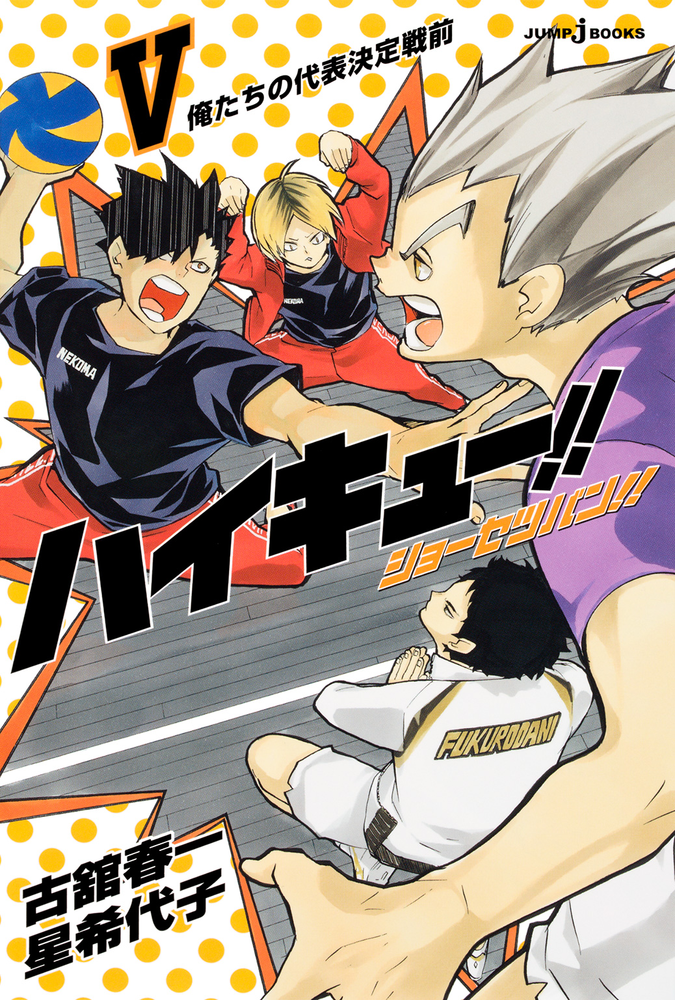
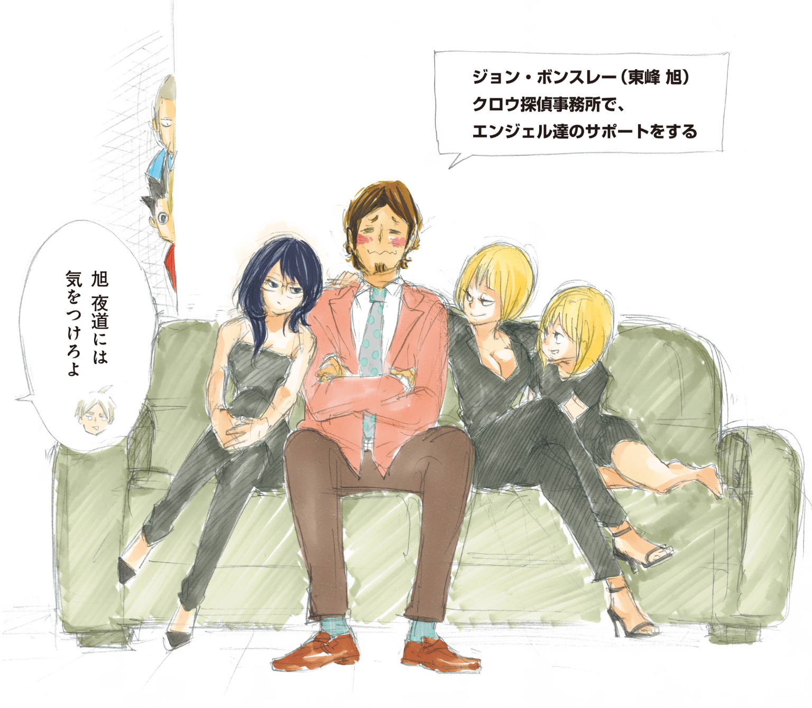
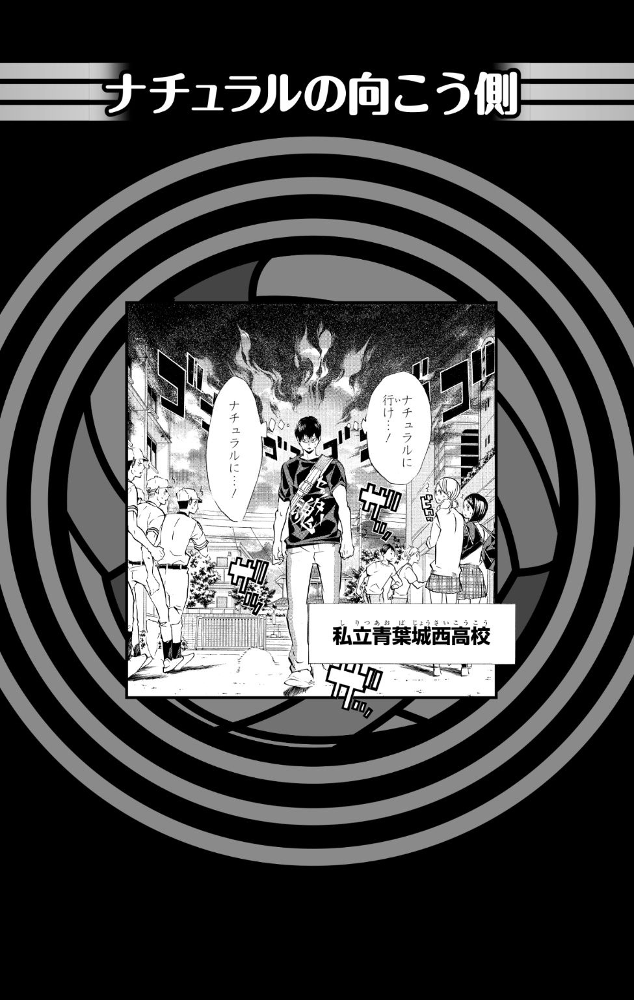

| ハイキュー!! ショーセツバン!! V 俺たちの代表決定戦前 | |
| 古舘春一 & 星希代子 | |

この本は縦書きでレイアウトされています。
また、ご覧になる機種により、表示の差が認められることがあります。

この作品はフィクションです。
実在の人物・団体・事件などにはいっさい関係ありません。
夏休みのさなかに行われた、全日本バレーボール高等学校選手権大会――通称、春の高校バレー、宮城県代表決定戦一次予選。
扇南高校、角川学園高校と予選を戦うなか、烏野高校の選手たちは自らの成長を実感せずにはいられなかった。
音駒、梟谷、森然、生川――関東の強豪を相手に戦ってきた夏合宿。そして元監督からの助言と指導。
この夏、未熟だった雛鳥たちは、悩み、考え、それぞれが新たな武器を手に入れつつあった。
一次予選突破――
だが勝利の喜びもつかの間、代表決定戦まではわずか二か月しかない。
全国大会へ進めるのは、十六校のうち、たったの一校。
王者、白鳥沢学園高校、青葉城西高校をはじめとした、いずれ劣らぬ強豪たちとの四試合を勝ち抜いていかなければならないのだ。
今の烏野では、まだ足りない。
彼ら自身が一番わかっていた。
まだ勝てない。
烏野高校は、負けてきた。
チームを全国へ導いたエース〈小さな巨人〉の引退、そして名将とうたわれた監督も去った。
強豪とも呼ばれた烏野は、見る間に地に落ちた。
落ちた強豪と揶揄されながらも、しかし彼らはいつかくるチャンスを摑むべく、日々研鑽を重ねていたのだ。
未熟だった雛鳥――彼らは今、勝利に飢えた雑食の烏に成長していた。
残る二か月、烏野高校排球部はさらなる進化を目指して、今日も体育館に集う。
チームとしての未熟さを可能性に昇華させて、烏たちは羽ばたくのだ。
勝ち続けるため、誰よりも長くコートに立つために。

ナチュラルにいけ......！ ナチュラルに......！ あたり一面に重く暑苦しい緊張感をまき散らしながら、影山飛雄がぎこちなく歩いていた。
夏休みが終わったとはいえ、８月下旬の空はまだまだ真夏という言葉がしっくりくる。それでも放課後には幾分日も傾き、暑い日中はおとなしくしていたアブラゼミが再び鳴きだしていた。しかし、その騒がしい鳴き声も影山には聞こえない。
すれ違う生徒たちの夏服、そしてグラウンドや体育館へ走る運動部の練習着は見慣れぬもので、いやがうえにも緊張が増す。影山の黒いＴシャツの背中が、日光を吸収してどんどん熱くなり、暑さで流れる汗と緊張から流れる冷や汗が背中で混ざる。それでも影山の表情は変わらない。作り物のようにピクリとも動かない。
そう、ここは勝手知ったる烏野高校ではない。影山は、10月末の代表決定戦で三たび烏野と対決することとなる対戦校、青葉城西高校へ忍びこんだところなのだ。偵察する第三体育館は、春に練習試合で訪れているため迷う心配はない。
俺は、ここの生徒。俺は、ここの生徒......。カッと目を見開き、瞬きもせず、心の中で唱える影山だったが、あからさまに不審なその姿に、すれ違った生徒たちはみんな足を止めて振り返っていた。
そして、第三体育館で練習中のバレーボール部員たちは、まだ影山の侵入に気づいていない――。

用具室からスコアボードを運んできた金田一勇太郎は、少し緊張していた。バレー部が単独で使用している第三体育館はふだんから人が多いが、今日はとくに人口密度が高く、騒がしい。増えた分の頭数は大学生のもので、今日はＯＢが所属する大学チームとの練習試合が行われる日なのだった。ウォームアップをはじめた大学生をチラチラと見ながら、バレー部員たちが試合の準備をしている。金田一もまた、落ち着かないまま大学生のアップを盗み見ていた。
デケー、強そー、っていうか、たしか大学生ってまだ夏休みなんだよな、うらやましー。などと他愛もないことを考えつつ次にやるべき仕事を探そうとした金田一の背中に、突然ゾクリと悪寒が走った。
「......な、なんだ今の？」
「なーにやってんだよ、金田一。ほら、どけ」
キュッと肩をあげた中途半端な姿勢で固まる金田一に声をかけたのは、後ろからボールの入ったカゴを運んできていた国見英だった。
「いや、今、なんか後ろから殺気が......」
素直にそう答えて背後にある窓を見た金田一だったが、国見の冷たい視線に気づくとバカなことを言った自分が恥ずかしくなり、ごまかすようにコキンと首を鳴らした。そして一応、ふだんどおり半分ほど開いた窓とボールよけの格子になんの異変もないことを確認すると「......緊張してんだな」とつぶやく。
「まあ、大学生、デカいしな。いるだけで圧迫感あるわ」
「だな」
そう頷き合って、ふたりは今日の対戦相手を見た。
「アレと試合するのか」
「やりたくねーわ」
金田一と国見は、他校ならばエースをはれる選手ばかりが集まると評され、県ベスト４に入る強豪青葉城西で、１年生ながらレギュラーの座を獲得した実力者だ。１９０センチ近い長身を誇る金田一は実直な選手で、対する国見はどこかとらえどころのない飄々とした選手ではあったが、ともに北川第一中学出身ということもあり気心の知れた仲だった。
金田一は先ほど感じた殺気のことはとりあえず忘れ、これからはじまる練習試合に集中しようとした。代表決定戦まで、もう時間がない。格上の大学生と試合ができる今日のチャンスは貴重だった。
「......ッシ!!」
気合いを入れ直し、そして国見に釘を刺す。
「ＯＢ来てくれてるんだから、あんまり手ぇ抜くなよ。やる気ないと思われたら先輩たちにも迷惑かかるからな」
わざわざ言わなくてもいいようなおせっかいにも聞こえるが、金田一に悪気はない。ただ生真面目なのだ。少し不器用なのかもしれない。国見もそれをわかっているからこそ、とくに気にもせずに受け流す。
「はいはい、わかって......、ん？」
面倒くさそうに答えかけた国見が、最後まで言い終える前に急に後ろを振り返った。しかし、そこには半分ほど開いた窓から見える夏の空があるだけだ。
「......なんか悪寒がしたけど、気のせいか」
「なに？ おまえも殺気を感じたのか？」
「いや、殺気とかワケわかんないし。冷たい風でも入ってきたんだろ。夜、雨が降るのかもな。傘持ってきてねーのに」
国見はそう言って舌打ちしたが、外の青空は天気が変わりそうには見えなかった。金田一は不思議そうに窓から天井、そして体育館の二階をぐるりと取り巻くギャラリーを見まわしていたが、そのあてどもなく動いていた視線が、ある一点でとまった。
「ん......？」
目に留まったのは、さっき出てきたばかりの用具室だった。いつもはぴたりと閉じられている扉が少しだけ開いている。
「俺、さっき国見と出たあと、ちゃんと閉めたよな......」
なんということもないといえばなんということもないが、いったん気になるとどうにも気になる。
「俺、異常ないか見てくるわ」
金田一は用具室を指さすと、足音を殺して近づいていった。国見はなにをバカなことを、という顔をしたが、金田一は真剣そのものだ。そして正義感と緊張に顔をこわばらせながら引き戸の取っ手に手をかけ、威嚇でもするように勢いよく扉を開けた。
「サーセン、誰かいますか!?」
しかし、薄暗い用具室の中に人の気配はなく、見慣れた備品が整然と並んでいるだけだった。金田一は扉に手をかけたまま、気の抜けたような顔でつぶやいた。
「気のせいか......」
「バカ......」
薄笑いを浮かべて近づいてきた国見に気づいて、金田一は静かに扉を閉めた。
「絶対、なにか隠れてると思ったんだがな」
「なにかってなにが？ なんのために？」
あきれ顔で訊いてくる国見に、金田一も少しムキになる。
「わかんねーけど。なにかこう......いろいろあるだろ、そういうの！」
「そういうのって......まさか幽霊とか言わないよな」
なにげない国見の言葉に、金田一の顔が一瞬固まった。
「......幽霊？ おい、変なこと言うなよ、国見。俺は、犬とか猫とかが迷いこんだんじゃないかと思っただけだ。幽霊とかふざけるなよ」
苛立ったようににらむ金田一に気づき、国見が薄く笑った。
「へえ、知らないのか？ この体育館、出るって噂」
「な、なんだよそれ、聞いたことねえよ。どういうことだよ」
さらにムッとした顔で詰め寄る金田一にあきれて、国見はダルそうに一歩退いた。
「......ただの冗談だよ、そんな怖がるなって。早く準備しないとドヤされるぞ」
「べ、べつに怖がってねえだろ！ 俺はただ......!!」
金田一が言い返そうとすると、ちょうどふたりを呼ぶ声がした。２年の矢巾が急かすように手を振っている。
「おい、１年！ 早く来いよ！」
「ウース」
国見が駆けだす。もう一度チラリと用具室を見たあと、金田一もあわてて後を追った。
大学生チームとの練習試合がはじまろうとしていた。ネットの向こう側にそびえ立つ大学生たちの姿を見ると、そうそう勝てるとも思えないが、かといって簡単に負けるのも悔しい。なんだかやりにくいな、という気持ちばかりがつのる。ネット越しに余裕の表情を見せる大学生と目が合い、緊張のあまり思わず目をそらした金田一の耳に、及川の声が響いた。
「はーい、吞まれないよ」
いつもと変わらぬ軽い口調に金田一が振り返ると、及川は続ける。
「いい？ まずは俺たちのために夏休み返上で来てくれたやさしいＯＢに感謝する。それから、胸を借りるつもりで......」
「......で、決めるぞ。相手が誰だろうと、べつにふだんどおりやるだけだからな」
締めの言葉をエースの岩泉に奪われて、及川が地団駄を踏む。
「もう、俺が言いたかったのに！」
もはや聞き慣れた感のある主将、副主将のやりとりに、金田一の緊張も解ける。そして他の部員たちも、もはやふくれる及川をなだめようともせず、それぞれのポジションにつこうとした、そのときだった。及川が、ふっと顔をあげる。
「ん？ どこからか視線を感じる。これは、もしかして......」
及川の言葉に金田一も足を止めた。さっき感じた殺気は、やっぱり気のせいなんかじゃなかったのかもしれない。ギュッと緊張して言葉の続きを待っていると、及川はもったいぶってぐるりとあたりを見まわし、芝居がかった表情のまま続けた。
「......オンナノコたちが隠れて及川サンの応援をしているのだろうか？ それなら恥ずかしがらずに出てきたらいいのに、そのほうが......ぐがッ！ 痛いよ岩ちゃん、なんで頭突き!?」
「蹴られたほうがうれしいか？」
「もちろんさらにイヤ!!」
金田一はやれやれといった顔を必死に隠してポジションについた。そして大学生は、余裕なのかそれともただバカなのか判断しかねるといった顔で、マイペースな高校生たちを眺めていた。
しかしひとたび試合となれば、大学生チームも及川の求心力を認めずにいられなかった。もとよりレベルの高い選手たちの力をさらに引き出し、意のままに操る、県内ナンバーワンの司令塔としての及川を、開始早々見ることとなったのだ。
及川徹は恵まれた体軀とセンスを併せ持つ選手だ。しかしセッターとしての力は天賦の才などではなく、日々、地道に研鑽を重ねることで手に入れたものだった。女子生徒にも人気のある華やかなルックスとは裏腹に、身を削るような努力を惜しむことがない。
大学生が放った重いサーブを、リベロの渡がなんとかあげた。ふだんから及川の強烈なサーブを受け慣れている渡だったが、その顔が歪む。しかしボールはきれいにセッターのもとへ返った。
同時にエースの岩泉、花巻、国見、そして金田一らスパイカーが飛び出す。
誰に打たせるか。瞬時に相手コートを把握した及川が、トスをあげる。センター。金田一がボールを、ブロッカーを見定めた。
高く跳んだ金田一の前に、しかし大学生三人の壁が立ちはだかる。
「......ッ!!」
打ち下ろしたボールはブロックに捕まり、金田一の足元で跳ねた。鋭くホイッスルが鳴る。
「......サ、サーセン！」
思わず頭を下げた金田一の言葉を遮るように、及川が言った。
「ごめん金田一、今のトス、ちょっと低かったね」
「あ、いえ！ ウス！」
決して驕ることのない主将及川の言葉に、金田一は改めて背筋を伸ばした。
今春、青葉城西高校に入学し、中学時代と同じくバレーボール部に入った金田一は、練習をはじめてまず驚いた。
――あれ、打ちやすい？
中学時代、高い技術はあれど、チームメイトのことなど爪の先ほども毛の先ほども考えていないような自己チュー極悪横暴セッター、通称「コート上の王様」のもとでプレーしていた金田一は、及川と同じコートに立って単純に驚いたのだった。
――あ、やっぱり打ちやすい。
そして、数プレーでさらに気づく。
――このセッターは、俺に合わせてくれてる。
肩、腕、指先――身体のあちこちが、伸び伸びと動くのがわかる。これまで身につけていた、サイズの合わない服や靴を脱ぎ捨てたように軽い。
さらに及川は、さも当然のように言った。
「１年とか３年とかそんなの関係なく、アタッカーとセッターなんだからさ。要求があるときは言う!!」
「は、はい！」
すげー、いや、すげーっていうか、これが普通なんじゃね？ そう思った瞬間、「王様」の怒号が甦った。
――もっと速く動け！ もっと高く跳べ！ 俺のトスに合わせろ！ 勝ちたいなら!!
金田一は孤独な王様――影山飛雄を思い浮かべて顔をしかめた。
「......フン」
俺は、このチームでおまえに勝つ。俺たちが、何度でも何度でもブッ倒す！
大学生チームと対峙する第三体育館のコートで、前衛の金田一、花巻が飛び出した。及川がチラリと金田一を見る。その目が言っていた。
「リベンジね」
充分な助走、踏みきり、金田一が跳ぶ。振りあげた、その最高打点にボールがあがる。
――絶対、決めるッ！
ブロックの上から金田一のスパイクが打ち下ろされ、相手コートでボールが跳ねる。
「ヨッシャアアアアアアアアアアッ!!」
顔をあげると、ネットの向こう側で悔しそうに金田一をにらむ大学生と目が合った。しかし、試合前のようにあわてて目をそらしたりはしなかった。ただ静かに、相手チームの動向を見るだけだ。
「よし、もう一本ッ！」
熱く叫ぶ金田一の背を、チームメイトたちが叩いた。
「ナイスキー」
「ウスッ！」
ボールの真芯をしっかりと捉えた手のひらが、熱くしびれていた。
休憩を挟み、及川がひとり、大学生チームに交じっての試合がはじまった。金田一は国見とともにスコアラーを務めながら観戦していた。
自分より経験値の高い選手ばかりのチームにいきなり入るにもかかわらず、及川は気負いも見せず「及川でーす」と笑顔でコートに入った。しかし、今日初めて顔を合わせた相手も多いなかでのセットアップだ。ひとりひとりの能力やプレースタイルもわからない状態での試合に、さすがの及川も動きにぎこちなさを見せる。コートの外で見ているだけの金田一も、緊張をおぼえた。
「大丈夫かよ......」
しかし、初めこそ見えたその違和感も数プレーで消えた。見る間にふだんと同じく攻撃の要となり、触媒のようにチームを活性化させたのだ。にわか仕立てのチームとは思えない、戦略的な攻撃を繰り出しはじめると、大学生たちの表情に敵味方それぞれの困惑が浮かんだ。なんだこれ、やりにくいぞ？ または、なんだこれ、やりやすいぞ？
「スイマセーン、もう少しネットから離したほうがよかったですよねー？」
「あ、ああ。そうしてもらえると助かる」
「次からそうしますねー！」
仮説を立てて実践、そして瞬時に結果を検証し、微修正していく。各選手の百パーセントを引き出そうという明確なビジョン、そしてそれを可能へ近づけるスキルを併せ持つ及川だからこそできる離れ業だろう。
金田一は目の前で起きているハイレベルなプレーに目を見張り、思わず感嘆のため息を漏らした。
「......スゲー」
やっぱり及川さんはスゲー。影山だって技術だけはすごかったけど、でも格が違う。３年生だからってだけじゃない、試合を作っていく力が圧倒的なんだ。
どこか誇らしい気持ちすら覚えながらスコアをつけていた金田一だったが、一方、心の底に小さく残るわだかまりにも気づいていた。
でも、俺がもっと上手かったら？
速く、高く、影山の高い要求に応えられるくらい上手かったらどうだっただろう。確かに影山は横暴だった。でも、俺たちがそれに見合う力がなかったのも確かなんじゃないのか。俺が、あの、烏野の小さい奴くらい跳べたならどうだったんだ。
いや、でもＩＨ予選だって、勝ったのは俺たちだ。影山、おまえが烏野で変わったのなら、俺はここでもっと上へいく。次にあたる代表決定戦も、絶対おまえたちに勝つ――！
「金田一、あのさー」
隣に立つ国見にシャツの裾を引っ張られ、金田一は我に返った。第三体育館の熱気と音が一気に身体へ戻ってくる。
「えッ？ あ、なんだ？」
「......いや、やっぱ、なにか今日、変な気配があるっていうかさ」
目の前の試合を見たまま、やる気があるのかないのかわからないふだんどおりの顔で国見が言う。金田一は、我知らずスコアボードをギュッと握って聞き返した。
「な、なんだよ国見。また冗談言って驚かそうって魂胆......」
「違うって。どうも、異様な視線を感じるっていうか。大学生が来てるからかと思ったけど、なにか違うんだよなー」
国見の言葉に、金田一はギュッと口を真一文字に結んだ。
「............」
「なんだよ、金田一。黙るなよ」
「......あまり喋るな。幽霊や妖怪は、自分の話をしてるところに寄ってくるぞ」
「はぁ？」
「怖がったら、負けだからな」
「べつに怖くねーけど」
私語の目立つふたりを矢巾が「おい」とにらむ。ふたりはあわてて頭を下げると黙った。しかししばらくすると、国見は声を落としてふたたび話を続けた。
「......やっぱりさっきからなんか見られてる感じがするけど、でもまあ、汗臭い体育館と幽霊ってのもミスマッチだよなー」
「またその話かよ......。でもまあ、それは確かにな」
金田一はそう言ってうーんと腕を組み、考える。
「......シゴキに堪えかねて辞めた部員の呪いならあり得るんじゃないか？」
「やだなそれ。それよか金田一、おまえ誰かに恨まれてんじゃないの？」
思ってもみない濡れ衣に、根が真面目な金田一は眉をひそめた。
「は？ やめろよ、なんでだよ」
「だって烏野に練習試合に行ったとき、影山と揉めてたし」
「揉めてねーよ。でも......」
金田一が言葉を濁したのを、国見は聞き逃さなかった。
「でも、なんだよ」
「いや、影山の生霊とか、ビジュアルが想像できすぎて嫌だな、と思って」
そうつぶやいて金田一が顔をあげると、国見も重々しく頷いた。
「あいつ、普通に生きてても充分怖いからな、顔」
そこでやっと目を合わせたふたりの脳裏に一体どんな影山の顔が浮かんだのかは知る由もないが、ふたりはひと呼吸置いて同時に顔色を失い、身体をブルリと震わせたのだった。
「ヤベーよ、怖すぎんだろ、影山!!」
「忘れろ、金田一。試合に集中するんだ......」
ＯＢとの合同練習は、まだまだはじまったばかりだった。
さらに決定的なことが起こった。休憩中、金田一たちの側にいた大学生から、ある会話が漏れ聞こえてきたのだ。
「さっき外ですれ違った奴、すげえ目つき悪かったな」
「あ、休憩のときだろ？ なんかギクシャクして、ヤバいオーラ出して、ゾンビ感あった奴。怖くてあんま見らんなかったけど、でも体育館のほう見てたよな。急に中に入ってきたりとか......」
「こえーよ！」
その会話を耳にして、金田一と国見が顔を見合わせる。
「なあ、国見。そいつがもう体育館に入ってきてる......ってことはないよな」
「呪いでも生霊でもなくてゾンビらしいけど、そんな奴が入ってきたら、さすがに全員気づくだろ」
そう答えた国見は、不審者なんているわけない、と、いたらやだなー、の狭間を行ったり来たりしている様子だった。しかし、金田一は持ち前の不器用な生真面目さからすっかり不審者探索モードに入っており、どこまでも真剣な表情で体育館を見まわしていた。そして、喉からヒュツとおかしな音を出して、一点を指さす。
「よ、用具室から影山がのぞいてるッ 」
」
「はァ!?」
金田一が指さした用具室では、確かに、先ほど閉めたはずの扉が再び少し開いており、そのせいで「少しだけ開いている押し入れ」のようなおどろおどろしさを感じないでもなかった。が、もちろんこんなところに影山などいるわけがない。きっと、さっき想像した生霊のインパクトが強すぎて幻覚を見たのだろう。
「よく見ろよ、ただのすき間だって」
「み、見間違いか......」
金田一は一気に噴き出した冷や汗を拭きながら、さらに用具室を見た。
「でも、さっき閉めた扉が開いてるな。もしかして、中に不審者がいるんじゃないか？」
「いねーって。もうやめようぜ、金田一。誰かがなにか取りに入っただけだって」
これだけの人数が体育館にいるのだ。どれだけ試合に熱中していようと、ゾンビ感あふるる不審者が出入りしていたら気づかないわけがない。
「そうかもしれねーけど、もし本当に不審者がいたら困るだろ！」
「いねーよ、いたらラーメンおごるし」
金田一を止めようと発した国見の言葉は、しかし金田一を焚きつけることとなった。
「ラーメン!? 俺、やっぱり見てくるわ！」
「逆効果かよ。やめとけって言ってんのに......」
しかし金田一は眉間にしわを寄せ、真面目な顔で訊き返すだけだった。
「ひとつ訊くが、ラーメンって、味噌バターコーンラーメンでもいいのか？」
「うるさいよ、トッピング代は自分で払え」
「約束な！」
そう言い残して意気揚々と用具室へ向かう金田一の背中に、国見がつぶやいた。
「俺、知らねー」
金田一は、扉のすき間からそっと用具室の中をのぞいた。電気を消したままの用具室は薄暗いが、毎日出入りしている金田一にはふだんと変わらぬ状態だとわかる。しかし、どこかがいつもと違う気がした。
「絶対、なにか隠れてそうなんだよな。落ち着いて探せ、どこだ......？」
掃除用のモップがいくつも壁に立てかけられ、古いスコアボードや、なぜか教室の机がひっそりと積まれている様子はふだんどおりに見えるが――。
「そこだな！」
金田一は跳び箱の最上段を持ちあげ、中をのぞきこんだ。しかしその中は空っぽだ。
「違ったか......、じゃあどこだよ」
壁に据えられた棚にはネットや、なにが入っているかわからない段ボール箱が置かれ、そしてその脇には丸められた体操マットが......。
あれ？
あのマット、あんなふうに巻いて立てかけられてたか？ ふだんは畳んで重ねられてなかったか？
目を凝らして見てみると、マットの巻きは少しゆるみ、その中央には人がひとり隠れられそうなすき間が空いている――。
「あそこか！」
金田一はガラリと扉を開けて中へ駆けこむと、勢いよく体操マットを倒し、転がした。
「出てきやがれ、不審者野郎!! 幽霊じゃねーなら、ひとっつも怖くねーんだよ!!」
巻かれていたマットが扉から体育館へ向かってゴロリゴロリと広がり、その端がぱたんと鈍く床を叩いて止まった。そして――それだけだった。
練習中の部員たちが驚き、遠くから眺めていた国見が内心「あ、やっぱり幽霊が怖かったんだな」と思っただけだった。
「あれ、なにもいない、のか......」
いきなり薄汚れたマットを引っぱりだして広げた金田一に、体育館中の視線が集まる。及川が興味深そうに近づいてきた。
「急に叫んでなにやってんの金田一。それ、なにに使うつもり？ もしかして......俺のための花道とか？ でも俺に似合うのは、そんなマットよりもっとふかふかのレッドカーペット......」
にこやかに喋っていた及川の鼻が、天井へ向かってグイッと引っぱられた。
「あァ？ ハナがどうかしたって？」
及川の背後から静かに鼻フックを決めた岩泉が、冷たい声で問いただした。
「岩ぢゃん、鼻はヤメデ!!」
「赤い絨毯がいいなら、鼻血で染めるか？」
「なにぞれ猟奇的！」
ジタバタと暴れる及川を締めつけ、岩泉が怒鳴る。
「おまえがチャラチャラしてっから、後輩が訳のわかんないことするんだよ！」
「ぞれは、ざずがに、言いががり!!」
「京谷だって戻ってくるんだから、しっかりしてろっつーの！」
そう言うと岩泉は手を放した。ようやく解放された及川が、赤い鼻をすすりながら岩泉を見る。
「狂犬ちゃん？ まあ、岩ちゃんに狂犬ちゃんを飼いならすのは無理かもねー」
「ほほう......」
しんと静まり返った体育館に再び及川の悲鳴が響き、金田一はマットを巻き直しながら震えた。
「す、すいません。俺のせいで......」
動揺する金田一に気づき、再度鼻フックを受けた及川が目に涙を浮かべながら気丈にダブルピースを決めてみせる。
「金田一、ダイジョーブ!!」
「お、及川さん......、ブタ顔にされながらも俺の心配を......！」
ひとりマットを片づける金田一の手に力が入る。
正直、なんだかよくわからないところもある人だけど、でも、今はこの人を全力で信じて、くらいついていくだけだ。この主将のいるチームで戦えるのは......、この代でプレーできる時間はあとわずか。一緒に戦える公式戦は、この春高が最後だ。残り少ない時間を、もっと大切にしたい。もっといろんなことを教わって、吸収して、もっともっと強くなって、このチームで全国へいくんだ。生霊だかゾンビだか知らないが、そんなものに邪魔されてるような時間なんかないんだからな！
体操マットを片づけ終えた金田一は、用具室から出てきて宣言した。
「よし、練習だな！」
「おまえが言うのかよ......」
少しあきれてつぶやいた国見が、金田一にボールを投げる。金田一は「おっ」とあわててキャッチすると、照れたように笑って投げ返した。
「次の試合、１、２年も入るぞ。アップしとけ」
「ウスッ！」
部員たちに謝って気合いを入れ直したあとは黙々と練習していた金田一だったが、しばらくするとその後ろでガタリと窓が鳴った。
「え？」
金田一と国見が顔を見合わせる。今度はふたりとも確かに聞いた、今度こそ気のせいではない。おそるおそる振り返ると、半分ほど開いた窓の下に黒い影がチラチラと動き、小さく話し声も聞こえる。
「どうやらゾンビじゃねーな」
国見が「たぶんね」と答える前に、金田一は一気に窓を開けて怒鳴った。
「誰だ、練習の邪魔すんな!!」
開け放った窓の外から、キャッと甲高い声がした。
「どーしよ、見つかっちゃった！」
「及川さんの写真を撮りたかっただけデスー!!」
そう言ってパタパタと楽しげに逃げていったのは、不審者でもなんでもなく制服を着た女子生徒ふたりだった。
「なんだ、及川さんのファンだったのか......」
立ち尽くす金田一の顔は、張りつめていた気がゆるんだようにぼんやりしていた。
「えー、誰だろ。逃げなくてもいいのになー」
一瞬の出来事だろうと自分の話題を聞き漏らすわけもなく、すかさず及川がやってきてニコニコと外へ手を振る。その隣で岩泉が拳を握りしめ、低く唸った。
「......ゴラ、及川」
「え？ なにその顔、なんで俺が怒られるの！」
「キャーキャー言われてんのが気に入らねーからだよ！」
「それは理不尽!!」
背中に主将と副主将の声を聞きながら、金田一がそっと窓を閉めた。
「すごい人たちなんだけどな......」
スカートをはためかせた女子生徒たちが跳ねるように逃げだしたその先、俯き加減にいそいそと歩く男の姿があった。幽霊でもゾンビでもない、影山だ。
「危ねえ、見つかるところだった......。植えこみの中、すげえ蚊に刺されたな......」
心臓はうるさいくらいにドクドクと脈打ち、耳はカッと熱い。その興奮は紙一重で逃げだしたスリルのせいではなく、及川のプレーを盗み見た興奮のためだった。
個人の力なら、あの人に敵いはしないだろう――そう思えば足に震えが走る。しかし、あれほどの強敵と戦えるチャンスを得たのだと思えば、期待に顔がニヤけそうにもなった。
早く戦いたい、いや、もっと時間が欲しい。いや......。
なにを願おうとも、代表決定戦は10月25、26、27日。負ければそこで終わりのトーナメント戦だ。勝ち進まなければ、青葉城西高校とは戦えない。
及川の三年間を詰めこみ、まさにチームとして結実した青葉城西と勝負できるのは、この春高が最後のチャンス――。
戦いたい！ そして、絶対に勝ちたい！
明るい月が輝く夏の夜道を影山は急いだ。チームメイトたちが待つ、烏野高校第二体育館へ戻るために。
CROW'S ANGELS
EPISODE 1 「参上」
昔むかし、この烏野の町に生まれた三人の少女は、それぞれの家庭で大切に育てられました。三人はとても個性的で、見た目も性格もまったく異なるタイプの女性に成長しましたが、彼女らには三つだけ共通点がありました。それは三人とも見目麗しく、才女であり、そして三人とも、今は私のために働いているということです。私の名は、クロウ――
気持ちのいい休日の午後、クロウ探偵事務所ではマネージャーのジョン・ボンスレーが忙しく立ち働いていた。新しい依頼が舞いこみ、三人のエージェント――エンジェルたちに召集をかけたところなのだ。もう間もなくやってくるだろうと思っていたところで、オフィスのドアが開いた。
「はーい、一番乗りは誰......えっ、馬!?」
ジョンが驚いたのも無理はない、ドアの外には一頭の競走馬が鼻息荒く佇んでいたのだ。
「遅くなってごめん、東峰。大会から直接駆けつけたから......」
乗馬服に身を包み、ひらりと馬から飛び降りた女性は清水潔子、凜とした表情と黒髪が印象的なクロウズエンジェルのひとりだ。
「おお清水か。俺、今、東峰じゃなくてジョンだから。それにしても、なんか忙しそうなところ悪かったな」
「ううん、優勝してから来たから大丈夫」
「さすがだなあ......。あ、その馬、裏に繫いできてね。怖いから」
清水が馬を連れていこうとしたところへ、今度は小柄な少女が元気に飛びこんできた。
「東峰さん、こんにちはー！ わあ、馬だ。かわいいですね！」
水着姿のままサーフボードを抱えてやってきた少女は谷地仁花、彼女もまたクロウズエンジェルの一員だ。
「み、水着!? ていうか、俺、ジョンだから、ジョン・ボンスレー」
「あっ、ごめんなさい！ 時間がなくて、大会から直接来たので水着のままで......！」
「聞いてないし......」
しょぼくれるジョンの隣で「仁花ちゃん、はい、服」と潔子が服を投げ、受け取った仁花がペコリと頭を下げる。
「ということは、最後のひとりもどこかの大会から駆けつけてくるのかな......」
ジョンがあごひげを撫でて待っていると、荒っぽくドアが開いた。
「ごめん、旭。バイト先から直接来たからこの格好でさあ」
やけに露出度の高い改造軍服に鞭を持ち、オフィスに遠慮なく色気をぶちまけたのは三人目のクロウズエンジェル、田中冴子だ。そしてジョンは、とうとうジョンであることを諦めた。
「もう東峰旭でいいや......。あ、冴子姐さんは大会で優勝とかじゃなくてバイトなんですね。怖くてなんのバイトか詮索できないですけど......」
「え、ただのウエイトレスだよ。まあ、今日も売り上げナンバーワンだったけどさ」
「ウエイトレスにも売り上げとかあるんだ......」
三人の美女が揃ったところでデスクに置かれたスピーカーのスイッチが入り、明るくハキハキとした男性の声が流れる――。
「おはようございます、エンジェルたち」
〈続〉
「そろそろ食堂閉めるみたいですよー」
そのひと声で、夜の体育館に響くボールの音が止まった。体育館の出入り口からひょこっと顔を出したのは、梟谷学園のマネージャーだ。全体練習後も居残って練習していた数人が「なに！」「ヤベエ！」とあわてだし、ようやく今日一日の後片づけがはじまる。
梟谷グループ恒例の合同合宿、８月最後の週末は東京の音駒高校が当番校となっていた。神奈川、埼玉、そして東京の郊外からやってくるグループ校とは違い、烏野高校は四百キロ近く離れた宮城からの参戦だ。当然、長旅の疲れもあるはずだったが、バレーにも食事にも貪欲な彼らの目にそれは感じられなかった。
今も烏野高校１年の日向翔陽が、両手にいくつもボールを抱えて走っていた。晩ごはんがかかっているとはいえ、練習後とは思えない元気さだ。そのスタミナは他校生だけでなくチームメイトも舌を巻く。
「ごはんっ！ ごはんっ!!」
跳ぶようにカゴへ向かって走る日向に気づき、同じく１年の影山が負けじとボールを探す。
「日向の奴、四つか......、それなら俺は五つだ！」
影山はコートに落ちていたボールを急いで集めると日向を追った。
「待てえええッ!!」
「うわ、影山!? 負けるかアッ！」
必死に追いあげる影山に気づき、日向がさらにスピードをあげた。が、後ろを振り返った瞬間にバランスが崩れたのだろうか、腕の中に積んだボールが、ボロボロと転がり落ちた。
「......あっ、ヤベ！」
「うわ！」
転がってきたボールを正面から迎え打つように踏みつけ、影山がゴロンビタンと派手に転ぶ。散らばったボールもそのままに、日向は床でピクリとも動かない影山に駆け寄った。
「だ、大丈夫か影山！ 今の、鼻だな！ スゲー痛いやつだったな！」
その声に、影山の指先がピクリと動いた。
「ひ、日向、テメエ......!!」
ゆらりと起きあがった影山の、流血こそしていないものの赤く腫れた鼻に日向の顔が固まった。
「ス、スマン。わざとじゃ、ないんデス。わざとでは......」
「わざとでたまるか......」
ヨロヨロとしかし確実ににじり寄ってくる影山の重圧に、日向が思わず身がまえる。
「デ、デスヨネー」
緊迫した空気に包まれたふたりの間に勢いよくボールのカゴが割って入り、避ける間もなくガコンとぶつかった。
「いてっ！」
「な、なんだ？」
ふたりそろって振り向くと、そこには音駒高校の主将、黒尾が裏のありそうな笑顔を貼りつかせて手を振っていたのだった。
「ハイ、キミたち、遊んでるヒマがあったらとっとと片づけ終わらせようなー。キミたちの部長にご心配おかけしたくないからねー」
朗らかにも聞こえる声の裏に潜む怒気、そしてふわりと感じた烏野バレー部部長澤村の幻覚に、ふたりはピッと背筋を伸ばした。
「は、ハイ、片づけます!!」
「サーセン!!」
そこいらに散らばったボールをあわててかき集めると、ふたりはどちらからともなく一緒にカゴを押して用具室へと駆けだした。しかし、その短い間にも、なにやらごちゃごちゃと言い合ってはぶつかり合うことを忘れない。
「あいつら、騒がしくしてないと死ぬのか？ リエーフと同じ病気か？」
ため息をついてふたりを眺めていた黒尾だったが、そのリエーフはといえば、体育館のすみにヒョロリと長い身体を横たえ、息も絶え絶えの様子だった。日向たちの衝突など聞こえてもいないだろう。
「ほら、早く片づけろリエーフ。メシ抜きになるぞ！」
レシーブの特訓をつけていた夜久が、倒れたリエーフを無慈悲に叩き起こす。
「うッ、は、はい......」
よろりと立ちあがるリエーフの目に、「ごはんごはーん！」と飛び跳ねながら体育館を出ていく日向と、理由はわからないがものすごい形相で日向を追う影山の姿が映った。
「あいつら......、なんであんな元気なんだ......？」
「オメーも少しは見習え！ オリャッ！」
夜久のローキックを受けて、リエーフが小さくうめく。その会話に黒尾は眉をひそめた。
「見習われても、イヤだが」
「はっははん、ごっはーんっ！」
「待て！」
「えっ、なんでだよ!?」
日向と影山が競い合うように食堂へ飛びこんできたのを見て、マネージャーの清水潔子と谷地仁花が「こっちこっち」と手を振った。
「お疲れさま、やっと来たね！ 今日は音駒の父兄の方から差し入れをいただいたから、夕食、すごい豪華だったよ。なんと、スイカもある！」
「スイカっ！」
「おお！」
今の今までなにやら言い合いをしていた日向と影山が、うれしそうに顔を見合わせる。ふたりの単純さにマネージャーのふたりが笑った。その彼女らが座っていたテーブルにはもうなにも載っておらず綺麗に片づいていた。
「......あれ？ もしかして、清水先輩も谷地さんも、食べ終わってたんですか？ おれたちがくるの、待っててくれたとか......ですか？」
首を傾げる日向に、清水は静かに立ちあがって言った。
「見張ってないと、君たちのスイカ、なくなるけど？」
「狩り場の獲物をすべて食い尽くそうと集まるケダモノたちを、清水先輩がちぎっては投げちぎっては投げ......」
そう言って、谷地が遠い目をした。
ならんだテーブルのあちらこちらで、飢えた男子高校生たちがどんぶりに山盛りのごはんをガツガツかきこみながらおかずのトンカツを薄切りハムかなにかのようにぺろりぺろりと平らげている。さらに彼らは肉を食べているその最中にも、調理場に置いてあるスイカをチラチラと盗み見ている。食堂は、今まさに欲望のただ中にあった。
日向たちと話しながらも食堂を監視している清水に気づき、定められた配給分「ひとり一きれ」よりなんとか多く食べられないものかと牽制し合っていた男子たちがあわててターゲットのスイカから目をそらす。
「こっ、これは戦場......。投げてくれて、ありがとうございますっ!!」
状況を察して深々と頭を下げた日向に、清水は表情を変えずに言い添えた。
「投げては、いないけど」
「先輩たちが守ってくれた晩ごはん、ありがたくいただきますっ！」
そう言って配膳カウンターへ並ぼうとした日向が、すでにテーブルについてモグモグと夕食を食べている影山に気づく。
「い、いつの間に!!」
「ふご？」
口いっぱいにキャベツの千切りを頰ばったまま、影山が顔をあげる。
「影山くん、ほっぺたがエサためこんだリスみたいにふくらんでる！」
谷地の言葉に、清水も少し笑った。
「じゃあ日向も食べて。私たち行くから」
「じゃーね、日向、影山くん。また明日ー！」
小さく手を振って食堂を出ていくマネージャーたちに日向がブンブンと手を振り返し、影山が頭を下げた。
「お疲れさまでーす！」
「モゴー！」
「仁花ちゃん、お風呂行こう？」
各校の女子マネージャーたちが寝泊まりする教室に戻った清水は、風呂の用意をしようとバッグをのぞいた。そしてタオルを手にとって、気づく。
「あ、タオル......」
「先輩、どうかしたんですか？」
手が止まった清水に気づいて谷地がたずねた。しかし清水は１年生に心配をかけてはいけないと、笑顔を見せた。
「仁花ちゃん、先にお風呂行ってきてくれる？ 私、ちょっと用事思い出したから」
「え？ あ、ハイ！ じゃあ先に行って待ってます！」
敬礼する谷地に「うん」と明るく頷いてみせると、清水は急いで洗濯場へ向かった。そして、洗濯機の前に山と積まれたままの使用済みタオルを見つけたのだった。
「......やっぱり。夕方、武田先生に呼ばれたあと、そのままだ」
洗濯カゴに積まれて置き去りにされたタオルが、薄闇の中、むんむんと自己主張の異臭を放っているように見える。清水はタオルをにらみながら、どうしたものかと考えた。
明日は天気が悪そうだし、今だって暑いけど湿度は高いし、これから洗っても明日の朝までには乾かないかもしれない。それだと明日使うタオルがない部員がいるかもしれない......。
「コインランドリーの場所、聞こう」
森然や梟谷のマネージャーなら、何度かコインランドリーを使ったこともあるだろう。もし彼女らが場所を知らなければ、音駒の人に聞けばいい。それでわからなかったら、それはそのときに考えればいいことだ。
タオルの入ったカゴを抱えると、清水は教室へ戻った。風呂へ行ったのだろう、教室に谷地はもういない。清水は少しホッとすると、急いででかける準備をはじめたのだった。
「ははんはんははーん」
今にもはちきれそうなお腹をさすった日向が、のんびりと鼻歌をうたいながら食堂から出てくる。
「風呂に入ったーら寝るだけー、あーしたーも朝かーらははんはんはは......あれ？」
デタラメな自作曲が中途半端に終わる。大きな荷物を抱えて玄関に立つ清水に気づいたのだ。こんな時間に一体なんの用事だろうと、日向は駆け寄った。
「清水先輩、どこ行くんですか？」
「あっ、日向。......ちょっと用事がね」
清水は言葉少なに答えると、そそくさとスニーカーを履いて外へ出ようとする。
「用事？」
なんだかいつもと様子が違う気がしたが、清水先輩がなにか悪いことをするとも思えない。でも、なんか変だし、荷物も重そうだ。
日向はちょっと迷ってから、おずおずと申し出た。
「......あの、おれ、それ持ちます」
振り向いた清水は、少し困った顔をしているように見えた。
「大丈夫、かさばるだけで軽いから。それより、お風呂に入ってきたら？」
「そうですか？ うーん、でも、１年が風呂に入るの最後だし、さっきもスイカを守ってもらったし、おれ、やっぱり手伝います！」
そう言って、日向はつっかけるように自分のスニーカーを履き、床に置かれたナイロンバッグを手に取った。
一瞬ためらった清水も、しかたなさそうに頷く。
「じゃあお願い」
「はい！ あ、本当に軽いですね。......入ってるの、タオルですか？」
バッグの布地越しに感触を確かめて、日向がたずねる。
「うん、洗い忘れたからコインランドリーに行く」
「えー、だったらおれ、絶対一緒に行かなきゃ」
これまでおどおどしていた日向が急に「絶対」などと言いだして、清水は少なからず驚いた。
しかし、日向は当然のようにまっすぐ清水を見て言うのだった。
「先輩、また変な奴らに絡まれたら大変なんで」
「あ」
春高一次予選のあと、条善寺高校の選手たちに絡まれたことを思いだす。あのときも、日向がやってきて助けてくれたのだ。
清水は改めて日向を見たが、その日向はなにやら考えこんでいるようだった。
「どうしたの」
「いや、先輩なら、ちぎって投げる......？」
「投げてない。......それじゃ、行こっか」
そうして日向と清水は、大きな荷物を抱えて音駒高校を出たのだった。
練馬区にある音駒高校周辺は、東京都内と聞いてまず日向が想像したような、恐ろしい大都会ではない。超高層ビルも、街をびっしりと埋めつくす眩しいネオンも、もちろん東京タワーも東京ドームも東京キーテイちゃんランドもない。のんびりとした住宅街の合間にあらわれる小さな空き地には早くも秋の虫が鳴き、生温い夜風に乗ってかすかに電車の音も聞こえてくる。ふたりはそんな静かな夜道を、急ぎ足で歩いていた。
重くはないけれどもモコモコとかさばるナイロンバッグを「よっ」と持ち直して、日向が訊く。
「あの、どこにあるんですか、そのコインランドリー？」
清水は携帯にメモした道順を見ながら答えた。
「そんなに遠くないみたい。森然のマネージャーさんが教えてくれたんだけど、５分くらいで着くって。......あ、その十字路を右」
「じゃあ、迷ったりしなさそうですね」
街灯に照らされた清水がこくりと頷くのを見て、日向は元気に声をあげた。
「よーし、レッツゴー！」
軽やかに地面を蹴って角を曲がろうとした日向を、清水があわてて制止する。
「あっ、日向！ だから、そこは右......！」
「え？ あれ？ 右ってこっち......あっ、違う！ こっち、左か！」
十字路の真ん中でひとしきりアタフタとあわてた日向だったが、ひと呼吸して落ち着くとキリリと真剣な顔を作って清水を見あげた。
「やっぱり、東京の道は難しいですね」
「今の、東京関係ない」
ぴしゃりとはねつけて歩きだした清水だったが、ふと心配になって振り返る。そして「おっかしーなー」などとつぶやいている日向に訊いた。
「日向、レフトとライトとちゃんとわかってバレーやってるよね」
「えっ、それはもちろんです！ 間違えたら......影山からものすごい目に遭わされます」
「......そうだね」
「あっ、わかりました」
日向は暗い夜道で立ち止まり、清水を見た。
「おれ、英語のほうがわかるのかもしれません！ おれグローバル！」
「うん、わかった。行こう」
「あれー」
そしてふたりは再び歩きだした。
トボトボと右へ曲がり、すぐに右手に現れるというコインランドリーを探して、もはや世間話もなく静かに歩いていった。
「あれ？」
前からやってくるその集団に、先に気づいたのは日向だった。
「あっ、やっぱり先生たちだ！」
前から、顧問の武田や烏養コーチ、そして音駒高校の猫又監督が談笑しながら近づいてきたのだ。その笑い声は大きく、どうやら早くもアルコールが入っているのだとわかる。
「直井を学校に置いてきたからな、今夜は心置きなく飲めるぞ」という猫又監督の声がはっきりと聞こえるころには、大人たちも日向と清水に気づいたようだった。
「おう、おまえらどこ行くんだ？」
烏養コーチに声をかけられて、清水は日向の持つバッグを見せた。
「ちょっと、コインランドリーへ」
烏養は「そうか」と納得して、今きたばかりの道を振り返る。
「たしか、さっき見かけたぞ。たぶん、あの、ちょっと光ってるところだな」
そう言って道の先を指さした烏養の後ろから武田が前へ出てきた。
「清水くん、もう遅いですし、僕もついていきます」
「でも、すぐそこですから。日向もいますし」
「そう、おれがいますから！」
誇らしげにエヘンと胸を張った日向を見て、猫又監督が鼻で笑った。
「チビスケなんぞ百人いたって、なーんの役にも立たんわ。どれ、みんなでついていくか？ それで、あー、あれだ。洗濯が終わったら、ふたりともわしらと一緒に飲みにいけばいいわな。なあ？」
「百人でもダメとは！」
ショックを受ける日向の隣で、清水が頭を下げた。
「せっかくのお申し出ですが、大丈夫です」
再び断ると、酒の入った大人たちも「まあ、すぐそこだしな」と納得して、ふたりに声をかけた。
「じゃあ、気をつけろよ」
「なにかあったら連絡してください！」
「気が変わったら、そこの居酒屋におるぞー」
二組はそこで分かれ、再びそれぞれの目的地、コインラインドリーと二軒目の居酒屋へと歩きだしたのだった。
「あっ、見えてきました！」
「本当にすぐ近くだったね」
ふたりは少し駆け足気味に、見つけたコインランドリーへ入った。青白い蛍光灯が頼りなく光っている店内は、今ちょうど動いている洗濯機と乾燥機のせいもあってか外より蒸し暑い。エアコンはなく、小さな扇風機がけなげに首を振っている。
「おれ、コインランドリーに来たの初めてです！」
清水が洗濯機のコイン投入口に小銭を入れている間にも、日向は狭い店内をキョロキョロ眺めながら歩きまわっている。椅子に置かれた何週間も前の漫画雑誌をめくったり、天井近くに置かれたブラウン管のテレビを見あげたり、小さな扇風機の前で「あー」と声を出してみたり、それにもすぐ飽きて空っぽの乾燥機をのぞきこんだりと落ち着きがない。
「この扉、丸くて大きくて、なんかアレみたいです。えーと、潜水艦！」
そう言って乾燥機の扉を開けた日向に、清水が警告する。
「絶対、中に入らないこと」
「な、なぜバレた......！」
日向はまるで証拠を消すかのように、あわてて扉を閉めた。そして、またふらふらと店の中を歩き、小さな自動販売機を見つけた。
「あっ、洗剤売ってます！ 一回分って、小さくてマッチ箱みたいですね。おれ、買ってもいいですか!?」
「うん、あとで帳簿につけるから、値段おぼえといて」
「おお、なんか仕事っぽい......」
日向はポケットから財布を取り出すと、ドキドキしながら小銭を入れた。洗剤の箱はすぐにコトンと軽い音を立てて落ちてくる。日向は口を結んで取り出した洗剤の封を開けると、そのいい香りのする粉末をタオルの入った洗濯槽へサラサラと投入した。そして、できたよ！ と言わんばかりの表情で清水を見あげる。
清水の口から、思わず素直な感想が漏れた。
「......子供？」
「え、なんですか？」
「ううん、なんでもない。じゃあ......洗濯終わるまで学校に戻ろうか。ここで待ってもいいけど」
「そっかー。でも、30分くらいなら、ここ、漫画もテレビもありますし」
日向はそう言うと、窓際に置いてあったリモコンでテレビをつけてみた。薄暗かった店内がパッと眩しくなり、少しおくれてバラエティ番組なのだろうか、ドッと大きな笑い声が流れてくる。しばらく見てからいくつかチャンネルを変えたが、なんだかどれもしっくりこないような気がして日向はテレビを消した。それから他になにかないかとキョロキョロしはじめる。
その様子をじっと観察していた清水が訊いた。
「コインランドリーが気に入ったんだね」
「えっ!? いや、あの、そ、そういうわけでは......！」
図星を突かれて、なぜかしどろもどろになった日向を見ると、清水は手近な丸椅子に腰を下ろした。
「じゃあ、ここで待とう」
「はっ、ハイ！」
古い椅子をギッときしませて、日向がやっとおとなしく座った。
丸椅子に座ったふたりは家族や友達にメールをしたり、再びテレビをつけて地元と違うチャンネルに戸惑いながらスポーツニュースを眺めたりして時間をつぶしていた。
着いたときに動いていた洗濯機と乾燥機はもう止まっていたが、洗濯物を取りにくる人もいない。潜水艦のような乾燥機の扉のせいか、日向はごうんごうんと回る洗濯機の音をエンジン音のようだと思いながら聞いていた。窓の外は暗く、海の底に取り残されてしまったような心細さがあった。
そのうち、練習の疲れと食後の眠気からか日向が大きなあくびをした。
「ふぁあぁ......あ、あっ、スイマセン！」
日向はじんわりにじんだ涙を拳で拭いて、申し訳なさそうにペコリと頭を下げた。
「いいよ、疲れてるとこつき合わせてごめん」
「いえ、全然！ なんか、こういうの、合宿っぽくて楽しいので！」
「楽しい？」
不思議そうに見返す清水と目が合い、日向はちょっとドギマギしながら続けた。
「あの、おれ、合宿とか練習試合とか、それに先輩とかマネージャーとか、あと専属のコーチも......、とにかく高校に入ってから本格的なバレーができて、すっげーうれしくて。今のこのコインランドリーも、合宿！ って感じがして」
そこまで言ってからギュッと口を結んだ日向に気づき、清水は黙ったまま目で続きを促す。少し頰を紅潮させて、日向が続けた。
「あの、それで、......こうやって毎日みんなと練習してたら、あの〈小さな巨人〉と同じ、春高のコートに立てるって思うんです！」
目を輝かせ、今にも椅子から立ちあがらんばかりの勢いで夢を語る。そんな日向につられるように、清水も少し笑った。
「うん、今年こそいけるよね。全国」
そのとき入り口のドアがガラリと開いた。よれたスーツを着て髪の毛をぺったりと撫でつけた小太りの中年男性がふらりと入ってくる。そして邪魔そうにふたりを一瞥すると、乾燥機へと向かった。
「教頭に、似てる」
清水の言葉に、日向がプッと吹き出す。
「......ん？」
教頭似の男ににらまれて日向は「スイマセン」と頭を下げる。そして顔をあげてよく見ると、男は鼻の脇のほくろの位置まで教頭と同じだと気づいた。
「クッ、ククククク......」
肩を震わせて笑いを堪える日向に、教頭もどきがムッとして言った。
「君はそこの学校の生徒かね、たしか音駒の......」
「えっ!? い、いえっ！ あの、おれたち、宮城から合宿に来たんです！」
そこまで言わなくていいのにという目で日向を見た清水だったが、当の日向は緊張のあまり気づいていないようだ。
教頭もどきは乾燥機を開けてシャツや靴下を取り出すと、ちゃんと乾いているか一枚一枚手で確かめながら話し続けた。
「そりゃあ、わざわざ遠いとこからご苦労様な話だ。君はさぞかし強い選手なんだろうな」
「い、いえ......」
顔立ちが似ていれば、性格まで似るのだろうか。それとも親戚かなにかなのだろうか。教頭に似た男はネチネチと日向を責めてくる。
「まあ見た感じ、大して強くはなさそうだな。一体、なんのスポーツをやってるんだか。野球か？ サッカーか？ こんな雑用をさせられてるんだ、どうせ補欠だろう」
「あ、おれたち、バレーボールやってますっ！」
放っておくといつまでも続きそうな嫌味を遮って、日向は胸を張った。なんなら、バレーボールがどれだけやりがいのあるスポーツなのか、テレビで見た〈小さな巨人〉がどれだけかっこよかったか聞かせたいくらいだった。
「バレーボール......？」
教頭もどきは、日向から清水に視線を移して顔を歪めた。そのガマガエルのような顔はますます教頭に似ている。
「じゃあ、そっちの美人さんは〈東洋の魔女〉だな」
「............」
無視を決めこんだ清水の代わりに日向が訊く。
「まじょ？」
「なんだ知らないのか。だらしがないな。全日本女子はかつて〈東洋の魔女〉と呼ばれて世界に恐れられていたんだ。若者ならスマホでちょちょっとやれば調べられるだろうが」
「お、おれ、スマホじゃないし、先輩は、マネージャーなので......」
「......ほほう、マネージャー？」
教頭もどきはさらに顔を歪めた。もしかして笑ったのかもしれない。
「そっちのキツそうな美人が、まさか世話女房タイプとはねぇ」
「にょっ......!?」
女房という言葉に驚いた日向はなにも言えなくなり、清水は軽蔑しきった顔でつぶやいた。
「最悪」
そのうち教頭もどきは持ってきたビニール袋に洗濯物を入れ終えた。日向と清水は、ちょっとホッとして顔を見合わせる。そして教頭もどきは帰り際に日向を見ると、いかにも人生の先輩からの助言といった鷹揚な調子で話しはじめた。
「バレーボールなんかして遊んでるのもいいが、学生の本分は勉強だということを忘れないように。文武両道という......」
日向の目の色が変わった。それ以上喋る隙をあたえず、言い返す。
「ごめん、おじさん。おれたち遊んでるわけじゃないんで」
「は？」
大きな声でも、強い口調でもない。しかし、日向のこれまでの少し困ったような表情とは打って変わった真剣な表情に、教頭もどきも息をのむ。思わずじりっと一歩下がった教頭もどきに、日向はさらに言った。
「それと、バレーボールは『なんか』とかじゃないですから」
「え......、あ、そ、そうか？ そんなもんか？ じゃあ......それじゃあな！」
豹変した日向が発するプレッシャーに気圧され、教頭もどきは袋に詰めこんだ洗濯物を抱えて、一目散に外へと駆けだしたのだった。
「あ、あれ......？」
急に教頭もどきに逃げられ、日向はなにがなんだかわからず、ぽかんと立ち尽くした。店の中に残る整髪料の匂いを、扇風機の風が静かに消していく。
清水が、おずおずと口を開いた。
「......結果的に、追い払ってくれてありがと」
「えっ!? おれがですか？」
自分がなにをしたのかわからずきょとんとする日向の後ろで、洗濯終了の合図が鳴った。
「あっ、終わった！」
ふたりは洗い終わったタオルを乾燥機に入れ替えて、小銭を入れた。そして乾燥機が回りだしたコインランドリーで、話の続きをはじめたのだった。最初にふたりがしていた、部活の話だ。
「あの、先輩は、どうしてマネージャーになったんですか？」
「私？ 私の話はいいよ」
「えー、じゃあ、主将たちが１年生の頃って、どんな感じだったんですか？」
「君たちほど、問題を起こしてはいなかった」
「......そ、そうですか」
ごうんごうんごうんと乾燥機の回る重たい音が響き、小さな扇風機が、じっとりとした夏の夜の空気と洗剤の匂いを撹拌する。アルミの引き戸の外を軽トラックが走り、建物がかすかに揺れる。ふたりの後ろにある丸い窓のなかで、たくさんのタオルがふわりふわりと回っては落ちた。それを見て日向が笑う。
「なんか、合宿っぽいです！」
「到着ーっ!!」
洗濯の終わったタオルを抱えて、日向と清水のふたりが音駒高校へ戻ってきた。そこへ誰にとっても運悪く、風呂あがりの２年生がちょうど通りかかったのだった――。
「あーっス!!」
先輩に気づいて挨拶する日向に、濡れた髪をぺたりとおろした西谷が「おう」と手をあげる。
「翔陽、他の１年、もう風呂入ってるぞ」
「はい、今行きます！」
そして、田中も声をかけた。
「日向、おまえ、どこ行ってたんだ、さっき影山が......なっ、なーッ！ なーッ！ おまえ、なぜに潔子さんと一緒にいるんだよ！」
扉に鍵をかけていた清水が振り返り、騒ぎに気づいてうんざりとした顔になる。
「え？ 今、タオルを......」
答えかけた日向の言葉を聞きもせず、西谷が玄関に飛びこんできた。
「ほ、本当だ！ 潔子さん、こんな夜遅く、一体ふたりでどこへ行ってたんですかーッ!!」
「あ、だから、タオルが......いてっ！」
ふかふかに乾きあがったタオルを見せようとした日向を突き飛ばし、西谷と田中は清水の足元にひれ伏した。
「潔子さんッ！ 答えてくださいッ！ その答え次第では、俺は、俺は......ッ!!」
「こんな夜遅く、ふたりでどこへ行っていたんですかーッ!!」
大騒ぎしているふたりを眺めていた縁下、木下、成田が「じゃ......」と帰っていく。清水は這いつくばるふたりを地を這う虫でも見るように一瞥したがなにも言わず、静かに目をそらして日向に言った。
「......今日はありがと。助かった」
「は、はいっ！」
立ちあがって敬礼した日向に「じゃ」と短く別れを告げてバッグを受け取ると、清水はひとりさっさと階段を上って部屋へ戻っていった。
その後ろ姿を仰ぎ見ながら、西谷と田中は静かに言葉を交わした。
「久々にいただきました、ガン無視」
「ああ、一点の曇りもない、美しいガン無視でございました」
菩薩顔をしたふたりの後ろから、日向が必死に説明しようとする。
「あの、おれ、メシが終わって、そしたら清水先輩がいて、おれ、なんだろうって思って、そしたらタオルが......」
しかし西谷と田中のふたりこそ、日向の話をガン無視するのだった。
「だが翔陽......」
「はい？」
「おまえは、許さねえええええええッ!!」
「森羅万象に詫びろッ!!」
菩薩から鬼の形相に変わり左右から飛びかかってきた先輩たちを、紙一重でよけながら、日向はあわてて逃げだした。
「ええっ、なんでですかぁっ!? 先輩たちのタオルなのにぃ！」
「うるせえッ！ 逃げきれると思うなよ、日向ァァッ!!」
「言い訳は聞かねーぞ、翔陽ッ!!」
日向がどれだけ必死に逃げようとも、彼らが今夜眠るのは同じ部屋。明日の夜までは、いつでもどこでも先輩と一緒の合宿生活がまだ続くのだった。
CROW'S ANGELS
EPISODE 4 「女子会」
「おはようございます、エンジェルたち」
今日もスピーカーからボスの声が響く。彼の名はクロウ、彼の姿を見たことのあるエンジェルはいない。彼女たちが知っているのは、スピーカー越しの声だけだ。
「おはようございまーす！」
ソファに腰かけたエンジェルたちは、まるで学校の生徒のように挨拶を返した。そしてクロウも、どこか教師のように問いかける。
「君たちは、伊達重工という会社を知っていますか？」
「知ってる？」
ソファにゆったりと身体を預けて脚を組んだ冴子が訊くと、潔子はクイッと指先で眼鏡を上げてうなずいた。
「はい、たしか世界一の科学力を誇るといわれる会社だったかと」
「へーえ、アタシは今初めて聞いたよ」
冴子が感心し、膝を揃えてちょこんと座っていた仁花がうっとりと潔子を見あげた。
「やっぱり先輩はすごいです！ まさに容姿端麗、才色兼備、八面玲瓏、傾城傾国......、私にはそぐわないキラキラした四文字熟語がよく似合う......」
憧れの視線だったはずがだんだんと落ちこんでいく仁花に、クロウはやさしく声をかけた。
「谷地くんもたくさんの言葉を知っていて素晴らしいですよ、落ちこむことはありません。清水くんもよく勉強していましたね、正解です。さて、その伊達重工から、我がクロウ探偵事務所へ依頼がありました」
「ふーん、なんでまたそんなデカいところがアタシたちに？」
そう訊いたのは冴子だ。
「それは、君たちが優秀な探偵だということは誰もが知っているからですよ。じゃあ詳しい話は東峰くんに聞いていただくとして......。それでは僕の天使たち、美しい漆黒の翼を広げて、今日も蒼穹へと羽ばたいてください！」
やけにポエミーな言葉を残して、スピーカーのスイッチが切れた。
静かになったスピーカーに向かって「バイバイ」と手を振る三人。そこへ東峰がトレイに紅茶とケーキを載せてキッチンから出てきた。
「はい、仕事の前に腹ごしらえだろ？」
「サンキュ、気が利くね。アンタ、いいお婿さんになるんじゃない？」
冴子の言葉に「ムコ......」と動揺する東峰を見て笑いながら、三人がさっそくケーキをつつきだした。
「それにしても、私たちのボスはどんな人なんだろう......」
「すっごくやさしいしポエミーだし、きっと素敵な男性だと思います！」
「アタシは酒が強い男ならそれでいいけどねー」
女子三人がケーキを食べながらお喋りする女子会じみたオフィスで、東峰がミッションの説明を始める。
「それじゃあ、今回の案件は......」
〈続〉
10月５日金曜日の夕刻。夏休み合宿が行われた埼玉の森然高校に、再び梟谷グループが集結しつつあった。まずやってきたのは、授業が終わってから駆けつけた梟谷学園と音駒高校の東京勢。千葉の生川高校はまだ着いていないようだ。そして、宮城からやってくる烏野高校の到着は夜になるという。
最寄り駅で一緒になった梟谷と音駒の部員たちが、ぞろぞろと連れ立って森然の階段を昇る。彼らは直接第一体育館へ向かったが、まだ森然のバレー部は来ていないようだった。そのかわり、遊んでいるのか部活なのかバスケットボールをしている生徒たちの姿がある。
「あー、じゃあ、第三体育館に行ってみるか」
「開いてるかな」
勝手知ったるグループ校、二校の部員たちはさも当然のように第三体育館に向かい、誰もいないことを確かめると我がもの顔でその場に陣取ったのだった。
「ヘイヘイヘーイ！ ここに来ると思いだすぜ、俺の夏！」
「......俺の？」
「烏野来るのって今日？ 明日？」
「さっき高速乗ったって、メールあった」
「小見さん、寝ないでください」
「寝てない寝てない、ちょっと横になってる、だけ......」
移動の疲れからかだらりと寛ぎはじめた部員たちにあきれて、黒尾が声をかける。
「おい、ネット張るぞ」
「あーッス！」
「サーセン！」
あわてて起きあがるバレー部員たちの中から、ひときわはつらつとした声があがった。
「よし、決めた！」
まだ静かな体育館に大声を響かせたのは、梟谷の主将、木兎だ。木兎は勢いよく飛び起きるとダッシュで用具室に駆けこみ、バレーボールをひとつ持って戻ってくる。そして、ぽかんと見ている二校の部員たちを前に高らかに宣言した。
「いいか、これからドッジだ！」
「......ドッジ？」
「ああ、ドッジだ！ おい、最初の外野は何人だー？」
ひとりでどんどん話を進めていく木兎の周囲で、音駒の部員たちがざわつく。
「ちょっと待て、ドッジって、まさかドッジボールか？」
「小学生じゃあるまいし、ドッジボールなんか......」
音駒勢から聞こえてきた言葉に、木兎がピクリと眉をあげた。
「ドッジなんか......!? ドッジストとして今の言葉は聞き逃せないな。いいか？ バレーとドッジ、競技はちがうが魂は似ている！」
「は？」
「......ドッジとバレー？」
「ドッジストってなに？」
さらにざわめく音駒勢に、梟谷の面々が申し訳なさそうに頭を下げた。
「放っといていいっすよ」
「こいつ、かまうと調子に乗るんで。適度にかまっとかないとへこむけど」
チームメイトたちの暴言など気にもとめず、木兎はニヤリと笑った。
「いいか？ 俺は、全国でも五本の指に入る選手」
「はじまった......」
「ネット張ってきます」
さっさと練習させようと用具室へ向かう赤葦の首根っこを「聞け」と捕まえ、木兎は重々しく続けた。
「その俺の勘が言っている......、ドッジの中にはバレーに通じる重要ななにかが眠っていると!!」
謎の多い言葉ながら、自信にあふれた表情と決して噓ではない全国レベルの実力――。木兎の言葉に、音駒の部員たちが揺れた。
「......確かに、木兎さんが言うならそうなのかもしれないよな」
「重要ななにかって、なんでしょうね！」
「全国レベルの人って、やっぱり違うッスねー」
求めていたとおりの好反応を前にした木兎が満足そうにカラカラと笑い、もはやそんなハッタリなど聞き飽きている梟谷の部員たちがうんざりと天井を仰いだ。
「森然がくるまで、試しにやってみようぜ！」
「主将！ なにかがなんなのか気になります！ やりましょうよ、ドッジ！」
山本と犬岡が、主将の黒尾に頼みこむその後ろで、リエーフがツカツカと木兎に近づいていく。そして、不敵に宣戦布告した。
「ドッジ、俺、超強いですからね！」
「マジか、ハーフくん！」
火花を散らすふたりを見て、黒尾が顔をしかめた。
「リエーフの奴、勝手なことを......」
と言いながらも、ニヤリと口角をあげて言葉を継ぐ。
「......でも、やると決まったら、勝つぞ」
梟谷からのドッジボール対決を受けて立った主将の言葉に、音駒の部員たちが沸いた。
「絶対勝ーつ！」
「ドッジとか久々です！」
盛りあがるチームメイトから少し離れて、孤爪がポツリとつぶやいた。
「......すごいヤだ」
離れているといっても距離でいえばほんの数歩。しかし、精神的には何万光年も遠くに後ずさっている。そんな孤爪のげんなりした顔に気づき、梟谷の赤葦がペコリと頭を下げた。
「なんか、すいません」
「い、いえ......、おれ、得点係やるんで......」
急に話しかけられて緊張した孤爪は、軽く会釈するといそいそとコートを離れようとした。しかし、その孤爪に芝山がめざとく駆け寄る。
「研磨さん！ それ、俺がやりますから研磨さんは試合してください！」
「え？」
「バレーでもドッジでも、梟谷に負けたくないですからね！」
芝山はニコニコと笑って孤爪をコートへ押し出し、自分はスコアボードを出しに駆けていった。
「むしろ、やりたくない......んだけど......」
孤爪の表情が、また一段と暗くなった。そっと逃げだしたいが、ここは森然高校。学校を出たら最後、どこにコンビニがあるかもわからない。下手に逃げて、烏野へ行ったときのように道に迷ってしまうのも、それはそれで面倒くさかった。
音駒の部員たちはといえば、ふてくされている孤爪に気づかず、もしくは気づいていてもいつものことと放っぽりだし、「俺、外野！」「外野の復活アリですか？ ナシですか？」「ドッジってローカルルール多いからなー」などと無邪気に盛りあがっている。その輪の中で、芝山と同じく１年生部員の犬岡が、どこか落ち着かずモジモジとしていた。
「俺も、審判とかしたほうがいいのかな......」
芝山と孤爪のやりとりを見ていたのだろう、犬岡が殊勝なことをつぶやく。しかし、残念ながらその紅潮した顔には、誰の目にも明らかなほど「やりたいやりたいドッジやりたい！」と書いてある。うっかり「じゃあ審判やって」などと言ったら、声もなくボロボロと涙をこぼしかねなかった。
「......犬岡、審判なら俺がやるから気にするなよ」
そう声をかけたのは副主将の海だった。待っていた言葉に、犬岡の顔がパッと輝く。
「え、いいんですか!? うれしいですけど......でも、ドッジなんですよ!?」
「ああ、心配しなくていいよ。でも、いつでも交代する用意はしておくから」
内なる闘志をのぞかせた海に、犬岡は顔をクシャクシャにしながら頭を下げた。
「海さん、ありがとうございます！」
こうして芝山と海がそれぞれ得点係と審判になり、孤爪以外すっかりやる気になった音駒と木兎だけが燃えている梟谷が、七対七のドッジボール対決をすることとなった。
音駒の外野手は山本、福永、犬岡の三名。モヒカン、無口、元気とバラエティに富んだ布陣で臨む。対する梟谷の外野手は猿杙、鷲尾、尾長の三名。梟谷の中でも体格の良さを誇り、安定感のある三名だ。どちらのチームも主将、セッター、リベロは内野からのスタートとなるが、なにか戦略あってのことだろうか。
コートの中央で木兎と黒尾がにらみ合う。バスケットのティップオフの要領で、主将のふたりが先攻後攻を決めるのだ。審判をつとめる海がボールをあげるとともに、ふたりが跳んだ。
「ゴー、ファイト!!」
一瞬早くボールに触れたのは木兎だ。自陣へタップしたボールを、リベロの小見がしっかりと受け取る。梟谷ボールでのスタートだ。
チッと舌打ちして着地した黒尾だったが、しかしすぐに余裕の表情を見せる。
「先手はくれてやるよ」
「余裕か......、ならば挨拶代わりにかましてやろう！」
木兎はそう宣言すると、小見から受け取ったボールを二、三度床についてから助走に入った。
「......喰らえッ、炎のシュートーッ!!」
床を蹴って高く跳んだ木兎の身体、そして腕がムチのようにしなる。
「絶対取るぞ！」
仲間にそう声をかけた黒尾めがけて、木兎の投じたボールが襲いかかる。速い。
――ドッ
音駒陣地で鈍い音がした。
「くッ......!!」
黒尾が膝をつく。しかしその胸にはしっかりとボールが抱かれていた。木兎の投げた球は確かに速く、重い。しかし、その球威は木兎のスパイクほどではない。取れる。
黒尾はゆっくりと立ちあがると、敵陣の木兎を見てニヤリと笑った。
「......おや？ 偉そうなことを言っておきながら、フクロウの奴らは本気を出さないつもりか？」
「なにいッ？」
煽られるがままに昂ぶる木兎を見て、黒尾がニヤニヤと続ける。
「ああそうか、わかった。適当にやれば負けても『本気じゃなかった』って言い訳できるからなあ！」
手練手管とはまさにこのこと。黒尾の策略に乗せられ、梟谷チームの空気が変わった。今まで木兎の気まぐれに渋々つき合っていた部員たちの闘争心に、遅まきながら火がついたのだ。
「言わせておけば、この野良猫野郎......！」
「バレーでもドッジでも負けるかっつーの！」
にわかに盛りあがりを見せるチームメイトに、木兎のテンションがさらにあがった。
「おお！ おまえら、やっとやる気になってくれたか!!」
「あの、相手の思うつぼなのでは......？」
赤葦の賢明な進言など、すっかり乗せられた木兎の耳には入らなかった。音駒陣地の孤爪が、同情するようなまなざしで、諦観漂わせる赤葦を眺めていた。
「よし......、生まれ変わった俺たちの不死鳥ドッジを見せてやる！ 絶対にボールを取り戻すぞ！」
「おう！」
赤葦をのぞいてすっかり臨戦態勢に入った梟谷チームが、グッと腰を落として攻撃に備える。ボールを奪った音駒も、孤爪以外の全員が勢いづいていた。
「それじゃあ、いくぞ！」
黒尾の攻撃。その素早い球にリベロの小見が飛びだす。そして向かいくる球を楽々とレシーブした。
「おい、ドッジじゃねーだろ、それ！」
黒尾の叫びもむなしく、流れと癖で赤葦がトスをあげた。ふわりと舞いあがったボールを見あげ、待ってましたとばかりに跳んだのはもちろん木兎だ。
「もらったーッ!!」
高い打点からのスパイクがリエーフを狙う。
「え、あ......」
レシーブかキャッチか迷う間もなく、ボールはリエーフの肩を直撃した。
「痛えッ！」
ついにひとり目のアウトが出たかと思われたとき、小さな影が動いた。リベロの夜久だ。夜久はとっさにこぼれ球にダイブし、床に落ちる寸前でしっかりとキャッチしたのだった。
「あっぶねー」
ほれぼれするような夜久のファインプレーだったが、コート上の選手たちは一斉に審判の海を見た。リエーフはアウトか、セーフか。海の判断で、今後のプレーが決まる。
「ボールが落ちる前に、他の人が拾った場合はセーフにしよう」
悠然と海が告げ、コートが沸いた。
「ドッジ、いいかもな。早く続きやろうぜ！」
「木兎の戯言だと思ってたけど、意外と練習になるな。どんどん拾おうぜ」
バレー部員たちはこうして敵味方の別なく、木兎発案の「バレーボール≒ドッジボール」説を信じはじめたのだった。
試合が再開し、夜久は外野の山本にボールをパスした。今か今かとウズウズしていた山本が、うれしそうに梟谷を狙う。
「拾うだと？ それなら、取りにくい高さを狙うだけのこと！」
山本はウイングスパイカーらしい攻めの姿勢を見せ、アンダーでもオーバーでも取りにくい高さ――胸元から首あたりの高さを狙ってボールを投げた。が、そのボールは、所在なさげに立つ赤葦にやすやすとキャッチされた。
胸元あたり、その高さはレシーブせずに捕球するならば難なくキャッチできる高さなのだった。
「あああああッ！ しくじったァァァァッ!!」
頭を抱えて吠える山本に、仲間からも「バカか」とため息が漏れる。その気が緩んだ一瞬を逃さず、赤葦が素早くカウンターを狙った。赤葦の手を離れたボールは低めの弾道を描き「猛虎さんドンマイです！」と声をかけていたリエーフの脚に当たった。
「痛ッ、またか......！」
しかし、夜久がふたたび跳びこむ。サイドラインギリギリでこぼれ球をキャッチし、リエーフはまたもやアウトを免れた。
「リエーフ、ボサッとしてんなっつの！」
続けざまにファインプレーを見せたリベロに、音駒の部員たちが駆け寄る。盛りあがる音駒コートとは裏腹に静まり返った梟谷コートでは、赤葦が悔しそうに自分の手のひらを見つめていた。
その背を、木兎がバチンと叩く。
「ドンマイ、赤葦！」
「......ウス」
素直に頭を下げた赤葦だったが、しかし、赤葦はアウトを取れなかったことを悔いていたのではなかった。なんでドッジボールなんてと思いつつ、相手の隙を見つけてついつい攻撃してしまった自分の軽薄さを恥じていたのだ。だがそれを口にはしない。面倒だから。とはいえ、ノーガードだった相手からアウトを取れないというのは、気分のいいものではなかった。中途半端な気持ちでコートに立つ者に、勝利の女神は微笑まない。
「............」
赤葦は小さくため息をつくとなにかを諦めた。そして顔をあげる。
「続けましょう」
かくして試合は続き、両チームともに強烈なボールを繰り出し合った。コートに剛球が飛び交い内野にヒットさせつつも、それをリベロがしぶとく拾う。両チームともなかなかアウトが取れず、内野外野の顔ぶれは変わらない。試合はすっかり膠着状態に陥っていた。
０対０のスコアボードの後ろで、芝山がギュッと拳を握って試合を見守っている。その真っすぐな表情からは、内野がいなくなれば終わりのドッジボールで果たしてスコアボードが必要なのか、という自分の存在意義を疑っている様子は窺えない。
芝山だけではない。もう誰もが今日から合宿だとか、ここが森然の体育館であるとか、そういったことはすっかり忘れ、目の前のボールのことでいっぱいになっていた。好敵手を前にした彼らに、もう練習前のお遊びという意識はない。いつの間にやら全員がうっかりドッジストと化していた。
「赤葦、あのリベロ厄介だな」
「はい、スパイクに比べたら投げる球は遅いですし、なんなら全部拾えるんじゃないですか。それはウチのチームも同じですけど」
赤葦の言葉に珍しく黙りこむ木兎だったが、しばらくすると小さく叫んだ。
「......わかったッ！」
梟谷の内野陣がなにごとかと木兎を見る。木兎は音駒に向かって「タイム、ターイム」と叫ぶと、仲間たちに言った。
「わかったぞ、いいか？ ......ドッジはバレーとは違う!!」
一瞬の間を置き、梟谷コートに罵声が轟いた。
「さっきと言ってることが違うだろ！ おまえもう喋んな！」
「俺がバカだった、木兎を信じた俺がバカだったんだ」
音駒部員たちが、またかと騒ぎを眺める。木兎は必死にチームメイトたちをなだめながら続けた。
「いやいやいやいや、だから！ バレーとは違うから！ だからこそ......リベロだ。リベロを狙え」
木兎の目が意味深に光る。
「は？」
「なにそれ」
きょとんとする小見と木葉に、赤葦が補足した。
「......たぶん、バレーのサーブでは避けがちなリベロをあえて狙うことで、こぼれ球のフォローをさせないという作戦、だと思います」
「そのとおり！ やはり俺天才！」
はしゃぐ木兎を鬱陶しそうに見ながらも、木葉がしぶしぶ頷く。
「確かにな」
「一生分の頭を使ったな、木兎」
笑顔で背中を叩いてきた小見に、木兎が涙目になる。
「小見やん、褒め方！」
そして、音駒コートにタイムの終わりを告げる。音駒が攻撃を再開したが、突然のタイムで流れと集中をきられ、さらには自分のアイデアにすっかり勢いづいている木兎にあっさりとボールを奪われてしまった。
木兎は奪ったボールを持ったまま、夜久を指さした。
「奪い、そして、狙う！」
そして勢いよく助走をつけ、跳んだ。
「喰らえッ！」
叫ぶと同時に、ボールが指先を離れる。
一直線に向かってくるボールを、夜久が一瞬の判断で避けた。ボールは音駒コートをノータッチで通過し、梟谷の外野、猿杙がキャッチした。
「いってー、なんつう勢いだよ......」
「サルー、リベロだ！ リベロを避けるな、狙えーッ!!」
木兎の言葉に作戦を理解し、猿杙も「おりゃッ！」と夜久を狙う。あからさまに狙われだした状況に気づいた夜久が、小さく舌打ちした。
「避けるとか狙うとか、イジメかよ！」
そして、目の前であたふたとボールを避けるリエーフに命令する。
「リエーフ、盾になれ！」
「え？」
きょとんとするリエーフの背後に素早く回りこむと、夜久は言った。
「なんのためにデカいんだよ、守れ！ 当たった球は、拾ってやるから！」
「痛いから、もう当たりたくないんですけど！」
「うるさい、だったらちゃんと受けろ！」
「ハ、ハイッ！」
夜久はリエーフや黒尾を盾に使いながら、コート内を所狭しと逃げまわった。その素早さと盾のデカさで、梟谷による集中攻撃を受けながらもなかなかアウトにならない。
「......おのれチョコマカと!!」
木兎が苛立ちを見せる。しかし、音駒もボールを奪取しないことには、攻撃に移ることができない。黒尾も焦りを見せはじめた。
「......逃げ回ってるだけじゃ埒があかないな。よし、リエーフ逃げるな、当たれ」
主将の言葉に、リエーフが驚く。
「ええっ!?」
「おまえが当たれば、夜久が拾える」
「なんですかそれー！」
「次、ボールがきたら、自信を持って当たりにいけ」
「いーやーでーすー！」
当たり屋作戦を断固拒否するリエーフの肩に、黒尾が手をおいた。そして、怯えるリエーフにゆっくりと語りかける。
「音駒の勝利はおまえにかかってるからな。期待してるぞ、次期エース」
「......エース？」
リエーフの目が光ると同時に、木兎が投球モーションに入った。黒尾がリエーフを見る。
「来るぞ、エース」
「ハイ！ エース、当たってきます！」
そう言い残し、リエーフは木兎の剛球に元気よく飛びこんでいった。ドゴッという鈍い音とともに長い身体を折って崩れ落ちたリエーフの陰から「骨は拾ってやるぞ！」と夜久が飛びだし、跳ねたボールをはっしと受け止めた。
「だ―――――ッ！ クッソ！」
すっかり頭に血の昇った木兎に、赤葦が声をかける。
「木兎さん、落ち着いてください」
「わーってる!!」
激高している敵陣の木兎をチラリと確認すると、夜久はリエーフと黒尾、孤爪を手招きした。
「よし、いいこと考えた。ちょっとちょっと......」
そして耳打ちする。
話を聞いた孤爪は「なんでそこまで......」と面倒くさそうな顔をしたが、黒尾とリエーフは俄然ノリ気のようだった。
「やってみるか」
「おもしろそうです！」
不敵な笑みを見せる音駒内野陣に気づき、赤葦が忠告した。
「向こう、なにか企んでますね」
「ええい！ なにを企んでようと、飛んできたボールを奪うだけッ！」
叫ぶ木兎を見て、赤葦をはじめとした梟谷のメンバーが不安そうに目配せし合った。熱くなりすぎている。こうなると碌なことにはならない。
対する音駒コートでボールを持ったのは孤爪だった。だるそうな顔のまま足を踏み出す孤爪に、梟谷が身がまえる。そのやる気のない表情とプレーのキレが比例しないことを、合同練習を重ねている梟谷は知っていた。
しかし、梟谷はすでに罠にはまっていたのだった。
孤爪はボールを持った腕を振りおろさなかった。モーションの途中で、なんとボールを後ろに投げたのだ。
「なにッ？」
フェイント。梟谷チームに動揺が走る。
後ろに放られたボールは長身の黒尾とリエーフの頭を越え、弧を描いてふたりの背後へ落ちていく。
木兎が気づく。
「こ、これは......デカいのふたりが壁になって、どこからボールが来るのかわからないアレだッ！」
音駒コートで、夜久の声がした。
「今だ、リエーフどけ！」
「はいっ！」
あわててしゃがんだリエーフの後ろからボールを持った夜久が飛びだし、投げた。
「喰らえッ！」
ドッという重い音とともに、木葉が倒れた。小見が必死に手を伸ばすが、ボールはその指先数センチをかすめ、外野へ転がり出た。
木兎が悔しそうに地団駄を踏む。
「クッソー！ チョコマカチョコマカとーッ!!」
その瞬間、暴れていた木兎が声もなくストンと崩れ落ちた。
トン、トントントン......とボールが跳ねて転がる。
「え？」
突然の王者陥落に、コート上の誰もが声を失った。そして、理解する。外野の福永が、拾ったボールを木兎の顔面に当てたのだ。
音駒陣営がどっと沸いた。
「ナイス沈黙！」
「福永さん、いたんですか！」
「存在を忘れるだろ、もっと喋れって！」
まるで勝利を決めたかのように盛りあがる音駒チームと裏腹に、梟谷陣営はしんと静まり返っていた。
今のアウトは痛かった。
当たった木兎も身体的に痛いし、二名続けてのアウトも痛い。そしてなによりこの不注意でのアウトで木兎のテンションが下がりに下がるだろうことが、チームにとってなにより痛かった。
しょぼくれモードに入った木兎は面倒くさい。ふだんから面倒くさいが、さらに面倒くさい。だれもがその面倒くささを恐れて、倒れた木兎に声をかけられずにいた。部員たちが、頼るように赤葦をチラチラと見る。
「......わかりました」
危険な仕事を押しつけられた赤葦が、あきらめの表情を見せて木兎に手を伸ばした。
「木兎さん、大丈夫ですか」
しかし心配の甲斐なく、木兎は元気に飛びあがって叫んだ。
「ヘイヘイヘイヘイヘーイ！ 顔面はセーフ！」
立ちあがったその顔にはひと筋の鼻血が流れているが、当人はまったく気にしていない。
「やられたら......やりかえすまでッ!!」
転がるボールを拾うと、木兎は声を張りあげた。
「喰らえッ、スーパーストロングスペシャルショーット!!」
サイドスローで投げられたボールが、風をきって飛ぶ。回転のかかった球は音駒部員たちの頭をかすめ、外野手がキャッチする直前でグンと曲がった。
「おっ、さすが俺、本当に変化球出た！」
木兎自身が驚き、チームメイトたちがあきれる。
「つーか暴投じゃねーか」
「どこ狙ってんだよー」
軌道を変えてさらに伸びていくボールを外野手が追いかけたそのとき、体育館の扉が開いて森然高校の主将が入ってきた。
「おう、みんなここにいたのかー。いないから探し......え？」
コート上の誰もが、目を閉じた。そのため、森然主将のこんもりとした頭を木兎の変化球が直撃した瞬間を見たものはいない。
第三体育館でのドッジボール真剣勝負は、こうして幕を閉じたのだった。
ドッジストからバレーボーラーへと立ち返った部員たちが、監督やコーチに叱られながら粛々と練習の準備をしていた。
痛む身体のあちこちをさすりつつネットを張るリエーフに、木兎が声をかける。
「ドッジの得意な自称エースくん！」
「......嫌味ですか」
むっとするリエーフに、木兎は笑顔で言った。
「夜、烏野が来たらまたドッジ勝負するぞ！」
「え......？」
その高校名を聞いた黒尾が、準備の手を止め、少々複雑な顔で嘆息した。
「烏野か......」
近くにいた各校の部員たちも、黒尾の気持ちを代弁するように次々と言葉を継ぐ。
「あいつら、バレーもやりづらいとこあるけどさ......」
「ドッジはさらに嫌」
「同感です」
「絶対面倒くさいよなー」
このとおり、梟谷、音駒チームともに、烏野高校とのドッジボール対決はなぜか避けたがるのだった。
「ぶえっきし！」
埼玉へ向かうマイクロバスの中で、日向が大きなクシャミをした。
「風邪か？」
混み合う車内で、部長の澤村が心配そうに日向を見る。
「いえ......、今ごろきっと東京の強豪たちがおれの噂を......ふっふふふふ......」
鼻水を拭きながら不敵な笑みを浮かべた日向を見て、田中が笑った。
「そりゃあきっと、いい噂じゃねーな！」
「えーっ、なんでですか！」
バレー部員たちの騒がしい笑い声とスナック菓子の匂いを乗せて、マイクロバスは東北自動車道を一路南へと急いでいた。
CROW'S ANGELS
EPISODE 9 「依頼」
「......つまり、伊達重工の機密データを奪ったヤツらを、アタシらがブッ潰せばいいんだな」
どこかうれしそうにニヤリと笑って冴子が身を乗り出す。東峰はリモコンを手に取ってテレビモニタの電源を入れた。
「まあ、そういうことだ。犯人の目星だけど、伊達重工のデータルームにカードが落ちてたらしいんだ」
「カード？」
エンジェルたち三人が声を揃えて訊き返すと、モニタに一枚のカードが映った。カードには決して上手とは言えない乱暴な文字が書きなぐられている。
――貴重なデータ 確かにいただきましたーッ！
そして、カードの隅には坊主頭の男の顔が描かれているのだった。
「......ぼ、坊主カード」
仁花がつぶやくと、冴子と潔子が思わずプッと吹き出した。東峰がテレビモニタを消す。
「手がかりはこの冗談みたいな坊主カードだけ。この一枚から、犯人を見つけてほしいんだそうだ」
「これだけ......」
潔子がため息をつくと、東峰が聞いた。
「無理か？」
すると、三人はニヤリと笑ってふたたび声を揃える。
「ううん、楽しそう！」
そして顔を見合わせると、本当に楽しそうにクスクスと笑い合った。その笑顔は危険な任務に向かうエージェントとは思えないほどに輝いている。
「よし任せといて。アタシらで見つけ出して、しっかり教育し直してやるから」
そう言ってソファから立ち上った冴子が、フンと笑って自前の鞭を撫でる。その冴子の、やけに面積の小さな服からこぼれ落ちそうな胸を見あげて、仁花が泣き笑いの顔になった。
「なんか、たわわんたわわんって音が聞こえてくる気がします......」
そして自分のつるてんとした身体を見下ろし、しょんぼりとつぶやく。
「わたしのも伊達重工の科学力で、なんとかならないかな......」
「いいんじゃないの？ 重工っていうくらいだし、頼めばドリルかロケットにしてもらえるんじゃないの？ 武器にもなるし、護身用にもいいじゃん。この依頼が終わったら頼んじゃいな！」
冴子が笑うと、仁花がおののいた。
「ドリルぅ......!? もう最悪ドリルでも......、いや、でもドリルはさすがに......。うー、やっぱり自分で研究してなんとかします！」
高らかにそう宣言すると、仁花はどこから持ってきたのかピンと糊のきいた白衣を羽織るのだった。
「ドリルか......」
仁花の隣でつぶやいた潔子の表情に気づいて、東峰があわてた。
「ちょっ、清水、そこ迷うとこじゃないから！」
〈続〉
10月、夏休みには蟬が騒がしかった森然高校の裏山にも秋の虫が鳴き、あれだけ悩まされた蚊も、うだるような暑さも、すっかり過去のものだ。とはいえ、合同合宿を行っている体育館は熱気にあふれ、誰もみな汗にまみれている。夏合宿と違うのは、全体を覆っている空気だ。どことなく緊張感の増した空気の中、澤村の声が聞こえてきた――。
「日向、Ａパス返せ！ 腕を振らない、下半身で取る！」
「......ハ、ハイッ！」
体育館の隅で続く澤村と日向のレシーブ特訓を見ながら、マネージャーの清水が手元のノートをめくっていた。毎日つけている選手たちの練習データだ。サーブレシーブ成功率のページを見つけて確認すると、日向の数字は夏の合宿に比べて確かにあがっている。
「もう一本！」
日向の元気な声が響く。清水は指先で眼鏡を直すと、アタック成功率のページに目を移した。
烏野高校バレーボール部は攻撃力に長けたチームだ。合宿に参加している強豪校とも互角に――とはいえずとも、なんとか渡り合えるだけの実力を持っている。練習試合での勝ち星では最下位に甘んじているが、まったく相手になっていないわけでもない。
しかし攻撃力だけでは勝ち進むことはできないということはわかっていた。先のＩＨ予選で、合同合宿の練習試合で、それは身にしみている。足りない要素はまだいくつもあったが、とくに１年生のレシーブにはまだまだ難があり、それは致命的なウィークポイントでもある。他校との練習試合をこなしながらも、個々人のレシーブ特訓を欠かすことはできなかった。今の彼らには、無駄に使える時間などないのだ。
返球が乱れ、日向が澤村に「スイマセン！」と頭を下げたそのときだった。
足元の床がドッと揺れて、日向が顔をあげる。
「スマンスマン」
コートでスパイクの練習をしていた東峰と菅原が、ふたりに謝る。
東峰のスパイクがサイドラインを越え、日向の足元で跳ねたのだった。その空気を震わせるような球威は、日向にはないものだ。
「......すごい」
「なあ、日向」
「ハ、ハイッ！」
澤村に声をかけられ、ぼおっと東峰の姿を見ていた日向があわてて背筋を伸ばす。
「試合のとき......例えば青城の及川とかにサーブで狙われて、で、自分がボールを落として試合が終わったらさ、日向はどうする？」
「試合で......落として......大王様が......？」
その情景を思い浮かべようと目を閉じた日向だったが、すぐにその目をカッと見開いた。
「ギャー！」
日向は青い顔をして叫ぶと、澤村に頭を下げた。
「主将、もう一本お願いしますッ！」
「......よろしい」
澤村は重々しく頷くと、再びやる気を見せた日向へボールを打った。
清水は少し笑い、そして練習に励む部員たちを眺めながら思う。代表決定戦を控えて、どの高校のコーチもプレーヤーも、誰もが夏合宿とは気合いの入り方が違っている。
なかでも、三年間ともに過ごしてきた澤村たちからは、今まで感じたことのない、息のつまるような緊張感を覚える。これまでで一番全国へ近づいた今、彼らの背負うプレッシャーはどれほどのものだろう。そして同時に、３年生はこれが最後の公式戦となるのだ――。
「あの、清水先輩。その、なんとか率の計算ってどうやるんですか？」
谷地が隣から清水のノートを覗きこんだ。
「そうだ、これも覚えてもらわないとね。これは......」
説明しようとした清水の言葉が止まった。コートから野太い悲鳴が聞こえてきたのだ。
「痛って――――!!」
「大丈夫か、旭？」
その叫び声に、どこから持ってきたのか備品のＡＥＤ（自動体外式除細動器）を片手に谷地が訊く。
「大丈夫ですかね......」
「うん、ちょっと待って」
清水は手で制した。菅原の声が聞こえる。
「だーから、旭はいちいち大げさなんだよ！」
「だ、だって、一応、血だからさァ......」
どうやら、彼らの声の調子からも大したケガではなさそうだった。
これまで以上に気合いが入っているかと思えば、いつもと変わらずどこかしら抜けている。ふざけ合っている菅原と東峰を眺めて、清水はポツリとつぶやいた。
「......まあ、これくらいリラックスしてるほうが、らしいかもしれない」
「え？ なんですか......？ あっ、フタが......あれ、ええと......あれ、スイッチ入っちゃった......？」
フタの開いたＡＥＤを床に置いて、谷地があたふたとあわてだす。
――イシキをカクニンしてください。
「え？ 声が......」
――キョウブを......
「喋ったあ！」
音声ガイダンスのはじまったＡＥＤに怯えて固まる谷地のかわりに、清水が機器をセットし直してフタを閉める。そして、谷地へ「おいで」と手招きをした。
「怖がらなくていいよ。この声のとおりにやれば、誰でも使えるようになってるから」
「そ、そうだったんですか......」
申し訳なさそうな顔で隣にしゃがんだ谷地が、渡された取扱説明書をめくってグッと真剣な顔になる。
「ひるまず使えるように取説を読破しなければ......。使えないと......、万が一のとき、私のせいで東峰さんの命があぶなくなってしまう......!!」
ひえええっと頭を抱えて丸まった谷地の背中をぽんと叩いて、清水も真剣に頷いた。
「うん、頼んだ。東峰を死なせるわけにはいかないから」
ふたりの会話に、絆創膏をもらおうと近づいてきた東峰の足が止まる。
「お、俺の命......？」
そして、恐怖のあまり声もかけられずにすごすごとコートへ戻っていったのだった。
肩を落としてやってくるエースに気づき、菅原が不思議そうに訊く。
「旭、早かったな。絆創膏なかったのか？」
「スガぁ、俺の命って、どうなってるのかな......」
「......はぁ？」
びくびくと怯える東峰をいぶかしげに見あげた菅原だったが長いつき合いからどうせまたつまらないことだろうとわかり、エースの大きな手にボールをグイグイ押しつけた。
「なんかわかんないけど、練習の続きするべー。ささくれから血が出たくらいじゃ死なないから」
「えー、でも痛かったんだぞー。ピッてなってさー」
「はいはい、わかったわかった」
「冷てぇ......」
菅原がさっさと話をきりあげようとしていると、隣のコートで雄叫びがあがった。
「ラッシャアアアアーッ!!」
田中の声だ。田中のスパイクが、菅原たちのいるコートまで跳ねてくる。そのボールを拾って東峰が言った。
「......よっと。見てなかったけど、今の入ったのか？ インナースパイク」
「どうだろ。でも、だんだんコントロールできてきてるみたいだな。夏合宿の後からずっと練習してるし」
「やるなー」
コートの外から見ていた谷地も、興奮気味に清水を見あげた。
「あれ、梟谷の主将さんがやってたヤツですね。腕がこっち側にビュンってなるやつ！」
谷地がやってみせた動作はスパイクというより盆踊りのようだったが、清水はコクリと頷いた。
「田中は、肩が強いから」
その声は決して大きくはなかった。しかし、離れたコートにいた田中はぐるりと首を後ろにまわし、爛々と光る目でマネージャーたちを、いや、清水ただひとりを凝視した。
「聞こえた......。確かに聞いた。今ッ、ついに、潔子さんに褒められたああああああッ」
感動のあまり、田中は首をひねった不自然な姿勢のまま泣いていた。むせび泣く田中を遠目に見ながら、清水が冷淡につぶやく。
「泣くのか」
「あの、今の、聞こえる距離じゃないですよね。だって、コートひとつ間に挟んでますし......。はっ、もしやこれが地獄耳？ ということは......ここが地獄!?」
「仁花ちゃん、ここは埼玉」
怯える谷地をなだめる清水のもとに、田中が床を鳴らして飛びこんできた。そしてうやうやしく足元に跪く。
「潔子さん！ 今のあなたの言葉、この身体にしっかりと刻みこみました！ おはようからおやすみまで、常にそのお声を思い返して生きていきます!!」
「待ってください！」
負けじと滑りこんできたのは西谷だ。
「今の龍のスパイクは、俺のトスあってのもの！ どうか俺のトスも褒めてください、潔子さんッ!! 俺にも、男の勲章を!!」
そのまま土下座でもしかねないふたりを眺めて、東峰が他人事のように笑った。
「収拾つかねーな、これ」
「おーい、サボってんなよー」
菅原もコートから声をかける。いつものことだ、わざわざ止めにいくほどのことでもない。澤村にいたっては黙殺で、田中たちを見もせずに黙々と日向のレシーブ練習を続けている。
「............」
頭を下げるふたりを眉ひとつ動かさずに見下ろしながら、しかし清水は迷っていた。ここは叱るべきか、いや叱るとますますつけあがるだろうか。叱ることで彼らと同じ土俵へあがることになってしまいはしないだろうか。
悩む清水の後ろから縁下が現れた。ひれ伏していた田中が顔をあげる。
「おお、縁下聞いたか！ 潔子さんが俺を......！」
縁下は憮然とした表情で田中と西谷を見下ろすと、吐き捨てた。
「さっきの、アウトだっただろ」
そのひと言で、田中と西谷が固まった。
「オウ......」
「確かに......」
しょんぼりと膝を抱えてうなだれるふたりに、縁下は続けた。
「まったく......バカやってないで、次は決めろよな」
チームメイトからの言葉に、ふたりはパッと顔をあげた。その顔はすっかり晴れやかで、さっきまでの落ちこみは影も見えない。
「......おう、任せとけっ！ よし、練習だー！ ノヤっさん、やるぜ！」
「おう！」
再び立ちあがり、元気に練習へと駆けだしたふたりの姿を眺めながら、東峰が舌を巻いた。
「縁下、収拾つけおった......」
「ハハ、次期主将は縁下かな」
田中と西谷を練習に戻らせ、さらにモチベーションまであげた縁下の手腕に菅原も満足そうだ。そして、その菅原の言葉に、清水はほんの少しドキリとするのだった。
次期。
３年の引退、それは入部した１年のときから決まっていることだ。夜がふけて朝がくるように、冬が春になるように。それは当然のことだった。当然なのだが、引退は朝がきたら、夜がきたらというものではなく、次の試合に負けたら、なのだ――。
「あの、先輩......」
隣からの声に振り向くと、谷地が心配そうな顔でこちらを見あげていた。
「田中先輩たち、また来ますかね......。ぴょーんと跳んでくると、どうしても身の危険を感じてしまって......」
谷地はオレンジ色のＡＥＤをギュッと抱えたまま、まだ少し怯えを残して田中たちの様子を見張っているのだった。清水は我に返り、反省する。
また無駄に怯えさせてしまった。
怯えさせたのは田中たちであり、どちらかというと谷地が勝手に怯えているのでもあるが、それでも清水は反省する。勧誘したからには責任を全うしなければならない。そしてその責任とは、獣のような部員たちから彼女を守ることだけでなく、彼女を一人前のマネージャーに育てることでもある。
それが、自分にできているだろうか――。
清水は時計を見ると、谷地に言った。
「もうすぐ昼休みだから、午後の練習試合で使うビブスの用意をしてくれる？ あと、飲み物の用意と、冷凍庫の氷も見てきてもらっていいかな？ それと、一応救急箱の中身も確認して......」
「あっ、は、ハイッ！ ええと、あの、いえッ、ちょっ......あー、ええとビブスどこに置いたんだっけ、あーでも、救急箱も見てー」
持っていたペンまで落とす谷地のあわてように、清水は再び反省する。
焦りすぎたのかもしれない。
どう見ても焦っているのは谷地で、清水はさっきからなにが起きても顔色ひとつ変えずに落ち着きはらっているのだが、「早く教えたい」という思いが先走り、一度にお願いしすぎたことを清水は反省する。もっと、押しつけでなく、彼女に合わせたサポートをしていかなくては――。
「じゃあ、今のは私がやっておくから記録のほうを......」
そう言って自分で準備をしようとして、清水は三たび反省する。
違う。後輩には自分のやってきたことを教えていかなければならないのだ。たくさん頼んだら可哀想だとか、自分でやったほうが早いだとか、そんなことでは意味がない。一緒にいられる時間は短いのだ。
少しずつ、それでいて着実に覚えていってもらわないと――。
清水は小さく深呼吸すると言いなおした。
「......やっぱり、先に給湯室のほうをお願い。ビブスは備品の箱に入ってるよ。あと救急箱は、昼休みの後で一緒に見よう」
「ハイ！」
元気に返事をしてパタパタと体育館を出ていく谷地を見て、清水は思う。焦らず、少しずつ、ふたりでがんばっていこう、と。
各校のコーチたちが、腕時計や壁の時計を確認してホイッスルを吹く。
「......じゃあ、キリのいいところで休憩！」
男子高校生たちから、うおおっとどよめきが起こった。緊張感あふれるボールの音やシューズの擦れる音、張りつめたかけ声が消え、弛緩しきった話し声と笑い声、カゴにボールを投げ入れるにぎやかな音に取って変わる。
高校生たちはあっという間にいなくなり、静まり返った体育館の床には、窓から射す光を受けてうっすらとネットの影が落ちていた。その上を、片づけ忘れられたボールがひとつふたつ静かに揺れている。昼休みだ。
今度は食堂が活気づく番だった。胃袋をギュッと摑まれるようないい匂いに頰を緩ませた高校生たちが、配膳カウンターにあふれかえって取っただの取らないだの、あっちのほうが多いだのと小さないざこざを起こし、逆に「これ苦手」「だったらよこせ」と平和的な協定も結ばれ、いくつかの湯のみや茶碗はひっくり返り、そのうちのいくつかの食器は不幸にも割れた。
「あーっ！ スイマセン！」
残念ながら、派手な音を立てて湯のみを割ったのは日向だった。焦って片づけようとする日向を、澤村が止める。
「日向、ケガするから触るな。ほうき持ってこい」
「は、はい！ あ、血ィ！」
大きな声とは裏腹に日向の指先にぷっくりと丸く浮かんだビーズ大の血を見て、菅原が笑った。
「一応、消毒してきな」
「はっ、はいぃ！ あ、でも片づけも......」
すっかり気が動転してアタフタするだけの日向に、清水も声をかけた。
「私たちで片づける。仁花ちゃん、日向についていってあげて」
清水に命じられた谷地は「ハイッ！」と敬礼すると日向を連れて食堂を出ていった。森然の生徒からほうきを受け取った東峰が、割れた湯のみをカチャリカチャリと片づけながらさみしげにつぶやく。
「スガ、さっき、俺のときは全然心配してくれなかったよな......」
「旭のは、ささくれ剝いただけだろー」
あちこちから「いただきまーす！」という明るい声があがるなか、烏野のエースは「ぐむぅ......」と湯のみの欠片を片づけ、清水は「俺がやります！ 俺がやります！」と騒がしい田中と西谷を無視してこぼれたお茶を拭いていた。
じきに手当を終えた日向と谷地が戻り、それぞれ先輩たちが確保しておいてくれたテーブルにつく。
「いっただっきまーす！」
そして、ようやく烏野にも穏やかな空気が流れだした。
テーブルには各学校の生徒が入り交じり、烏野高校の部員たちも、たまにしか会えない好敵手、音駒高校との交流を楽しんでいた。話は試合や練習の話から監督たちの物真似、そして新作ゲームソフトにグラビアアイドルとあちらこちらへ飛び移りつつ、全員が食べ終わるころには無事にバレーボールの話題へと着地する。
お茶を飲んでひと息つくと、黒尾が言った。
「......烏野がウシワカに勝たないと、〈ゴミ捨て場の決戦〉もないからな」
その言葉にグッと緊張する３年生を差し置いて、日向がとっさに叫ぶ。
「おれたち勝ちます！ ぜったい勝ーつ！ そうですよね！」
日向に真っ正面からそう言われ、澤村は少し笑ってから黒尾を見た。
「ああ、そっちも勝てよ」
「当然」
不敵な顔つきで答える黒尾に、わざわざ離れた席から木兎が突っかかってきた。
「ほほう......おまえら、俺たちに勝つつもりなのか？」
そう言って梟谷チームが集まっていたテーブルから、黒尾のもとまでやってくる。「戻ってこーい」「迷惑かけんなー」という梟谷部員たちの声も聞こえてきたが、結局お目つけ役として副主将の赤葦が送りこまれてくる。
立ったままテーブルに手をついて好戦的な顔をする木兎を、黒尾は愉快そうに見あげた。
「......オレたちが負けるとでも？」
「あァ？ 今の冗談か？ おもしろくねーな！」
ニヤニヤと黒い笑みを浮かべながら牽制し合うふたりを、各チームの２年生セッターがたしなめる。
「クロ、やめて」
「木兎さん、挑発はやめてください。それに東京は第三代表まであります」
冷静な赤葦の言葉に、黒尾も頷いた。
「まあ、緒戦で当たれば、勝ち進むのはどちらかになるけどな」
「えー。でも、ほら三位決定戦があるじゃないですか！」
明るくそう言ったリエーフを、木兎がにらむ。
「負けたときのことなんて考えるな、前向きに考えろ前向きに！」
「最初に負けるとか言って揉め事を起こしたのは、木兎さんでは」
あくまでも冷静な赤葦に、木兎がムキになって言い返す。
「俺は、俺たちが勝つって話をしたの！ 超前向き！」
梟谷の主将、副主将を見て笑っていた澤村だったが、ふと真剣な顔をした。
「宮城で全国へ進むのは、十六チームの中から......一校だ。でも木兎の言うとおり、負けたらそこで終わりだなんて当然の話をしてもしかたがない。とにかく、一勝することだな」
澤村の言葉に、敵同士である全員が頷いた。誰もが一勝の持つ重み、そして一敗の重みを身体で知っている。思うことは同じ、目指すところも同じだった。
彼らの話し声は、隣のテーブルにいたマネージャーたちにも聞こえていた。
「前向き......」
チームが負けたって勝ったって、引退は寂しい。日本一になったって世界一になったってきっと同じだ。だったら、とにかく悔いだけは残さず、胸を張って引退したい。
いや、そんなことよりも、まずは一勝。いや、それより午後の練習に集中しなければ。
清水は席を立った。
「仁花ちゃん、午後の準備に行こう」
「あ、ハイッ！」
ふたりのマネージャーが、体育館へ向かう。
清水は廊下を急ぎながら、一戦、一勝をその手にひとつずつ摑みながら、綱渡りのように大会を渡っていくチームメイトの姿を思った。そして、その彼らの姿を見あげているだけでなく、その険しい道を一歩一歩ともに歩いていけたらと強く願うのだった。
一日の終わり、マネージャーたちが寝泊まりしている教室には、昼間の体育館とは打って変わって穏やかな時間が流れていた。夏合宿のときには開け放たれていた窓も今日は閉じられ、入ってくる虫に悩まされることもない。
やたらと叫び、走りまわり、大声で笑っていたかと思えば喧嘩をはじめ、気づけばアレがないコレがないとなにかを探しまわっている、身体だけは大きな男児集団から解放されて、マネージャーたちはそれぞれとっておきのチョコレートやお茶を持ち寄り、お互いを静かに労り合っていた。
「ふぅ」
やっと人心地ついた清水は、床にぺたりと座って明日の準備をしている谷地を見た。
「練習中の仕事は、もうだいたい把握したみたいだね」
「えっ、いえ、まだまだです！」
緊張して振り返る谷地を見てやさしく笑うと、清水は少し考えてから言った。
「あとは......簡単な応急処置を覚えてもいいかも。図書室に行けば本があると思うから、今度コピーをとって救急箱に入れておこうか。昼休みとか、時間のあるときに一緒に行こう」
「は、ハイ！」
「あとね、合宿所とか試合会場でもそうだけど、まず水道の場所を見つけておくといいよ。これからお水もどんどん冷たくなるから、ハンドクリームを持ってたほうがいいかもしれない」
清水の言葉に、他校のマネージャーも「わかるわかる」と口を挟んだ。
「学校の水道って、なんでお湯出ないんだろ」
「噂では、私立の学校ではお湯が出るという......」
「マジかー」
「体育館にエアコンもあるとか」
「そんな夢みたいな学校が......。あー、もうポテチも食べよ」
「あんた本当食べるね......」
彼女たちのやりとりに笑いながら、清水は続けた。
「そうだ、部費の管理や備品の発注も教えなきゃね。ふだんはなかなか時間が取れないから......合宿の夜って、のんびりしててちょっといいね」
そう言って笑顔を見せた清水に一瞬「美しさ......」と見惚れた谷地が、ハッと我に返って答えた。
「......はっ、はい！ 合宿は大変ですけど、楽しいです。でも......、マネージャーってやることいっぱいあるんですね。私、ちゃんと仕事覚えられるでしょうか......。私ひとりになった途端、他の部のマネージャーに押しきられて給湯室の氷を確保できなくなったり、体育館がバスケ部に乗っ取られてしまったりしたら......」
妄想を巡らせて震える谷地をはげますように、清水は言う。
「大丈夫、仕事はひとつずつ覚えていけばいいし、私、仁花ちゃんのこととても頼もしく思ってるよ。いつも覚えたことをノートにまとめてて一生懸命だし、スコアなんて私より綺麗につけてて。それに、ポスターをつくってくれたのも助かったし......やっぱり仁花ちゃんは、そういうデザインとかが得意なんだね」
「そ、それは......私が得意というよりも母が......」
褒められ慣れていない谷地がむずがゆそうな顔をするのを見ながら、清水は続ける。
「慣れてきたら、雑用だけじゃなくてもっといろいろできることがあるはずだから、がんばってみて。選手たちのコンディションを見て、ひとりひとりに合わせた練習メニューを考えてみるのもいいかも」
「そっ、そんな、滅相もない！ 私なんかが......畏れ多いです！」
「そう？ 仁花ちゃんはデザインとか得意だから、わかりやすく図解してあげると、みんなやりやすいかもしれないよ」
谷地が、ハッとする。
「......そういうことも、できるんですね」
「うん、自分のできることをやればいいと思う」
そう言いながら、清水は部員たちのことを思い返していた。みんなそれぞれ得手不得手があって、優れた点はさらに伸ばそうと努力し、欠点があれば克服しようとやはり努力して、高め合い、補い合い、チームとして強くなってきたのだ。それを外から見ているのでなく、自分たちマネージャーもチームの力になれればどんなにうれしいことだろう。
「うう......先輩、これからもずっとずっと一緒にマネージャーやりたいですうぅ」
涙目で見あげてくる谷地を見て笑いながら、清水はつぶやいた。
「留年は、困るかな......」
翌日の午後、烏野高校の合宿が終わった。これから一路、宮城へ戻るのだ。梟谷グループの部員たちが練習を中断して、黄昏の光に染まる中を見送りに出てくる。
主将の澤村が、前へ出た。
「悪いな」
黒尾は黙って首を振ると、澤村を見た。
「東京体育館で会うぞ」
「おう」
張りつめたふたりの空気に、清水は思い出す。
澤村は「烏野はもう一度全国へいく」と言っていた。もうずっと、全然注目もされてない烏野だったけれど、「飛べない烏」だなんて言われていたけれど、それでもずっと、本気で言っていたのだ。全国へいくと。
「烏野高校排球部」の文字を堂々と背負った澤村の、いつもの見慣れた背中をしばらく見ていた清水だったが、ふっと踵を返すと、どこか晴れやかな表情で長い階段を降りはじめた。一歩、二歩と背筋を伸ばして歩いていく。
途中で谷地の姿を探して振り返ると、他校の選手たちが見送りに集まる中へ紛れこんで、アタフタともがいているのが見えた。
「仁花ちゃん、こっち！」
「は、はいぃ！」
なんとか抜けだした谷地がヨロヨロと階段を降りてくる。その後ろを、烏野高校排球部のチームメイトたちが全員揃って続く。
見あげる目に西陽が眩しくて、清水は目をしばたたいた。
春、３年に進級したとき、部はガタガタだった。指導してくれるコーチはいなかったし、東峰も西谷も欠けていた。東峰なんか、戻ってきてくれるかどうかもわからなかった。東峰に、なんて声をかけていいかもわからなかった。新入部員は入ってくれたけど、問題児ばかりだった。体育館に入れてもらえない新入部員なんて初めて見た。
でも、少しずつ、少しずつ、みんなとても不器用だったけれど、それでも少しずつ、まとまって、チームになってきて、新しいマネージャーも入って、そして、今、全員で階段を降りてくる。
「清水せんぱーい！」
谷地が頰を上気させて手を振る。清水も小さく振り返す。田中と西谷があわてて駆け下りようとして、縁下たち２年が止める。それを見て３年生が笑う。日向が振り返って、見送ってくれている他校の部員たちに大きく手を振り「春高でなー！」と叫ぶ。その手がぶつかったと言って影山が怒鳴り、月島がうるさそうに距離を取る。その月島に山口がなにやら話しかける――。
いつもの、見慣れた仲間たち。全員揃った彼らを見て、清水はほんの少しだけ笑ってしまう。
彼らとともに、勝つのだ。一緒に、全国の舞台へいくのだ――。
「おーい、みんないるかーい！ 忘れ物はないかーい！」
マイクロバスの助手席から顧問の武田が手を振り、歩道に立つ烏養コーチも煙草の火を消して顔をあげた。清水は呼吸を整えると、武田に言った。
「大丈夫です。全員、揃ってます」
CROW'S ANGELS
EPISODE 15 「重火器」
「ただいまーっ」
東峰が留守番していた事務所に三人のエンジェルたちが戻り、オフィスは一気に華やいだ。
「おう、お疲れさん。聞きこみはどうだった？」
依頼を受けた翌日、三人は伊達重工へ聞きこみに行ったのだった。外部から恨みをかっているような社員はいないか、他社と揉めている部署はないか......。しかし戻ってきた三人の表情からして、手がかりになるような情報は得られなかったようだ。東峰は申し訳なさそうに、三人に言った。
「あの、帰ってきたとこで悪いんだけどさ、地下に武器を用意しといたから見といてもらえるかな？」
武器と聞いて、仁花が不思議そうな顔をする。
「えっ？ みんな武術の達人なのに、武器がいるんですか？」
「実はさ、伊達重工にまたカードが届いたらしいんだよね」
冴子がキュッと眉をあげた。
「また例の坊主カード？」
「いや、モヒカンカードだって」
冴子に「はァ、なにそれ？」とすごまれ、東峰は少しひるみながら答える。
「い、いや、俺もよくわかんないけど、なんか、清水に蜂の巣にされたい......ってリクエストが書いてあったらしくて」
「リクエスト？ それ、相手の言うこときく必要ないんじゃ......」
潔子も眉をひそめる。
「うん、でもまあ一応用意しとこうってボスが。ほら、武器をエサに敵をおびき寄せられるかもしれないだろ？」
「まあ、そういうことなら......」
潔子がなんとか自分を納得させると、東峰が「それじゃあ」と机のボタンを押した。すると壁の一面をうめていた本棚が真ん中から左右に開き、階段が現れる......。そして三人は、東峰の後について地下の隠し部屋へ降りていったのだった。
地下室に隠されていた木箱を開けると、三人は息をのんだ。
「......サブマシンガンか」
「あとは日本刀と......これはワイヤー......？ ワイヤーってなにに使うんだろ？」
キョトンとする仁花に、冴子がさも当然のように答える。
「締めあげるも肉を断つも思いのままじゃん」
「し、仕事人......！」
震える仁花の隣でサブマシンガンに手を伸ばした潔子に気づき、冴子がニヤリと笑った。
「ふうん、あんたがソレを選ぶならアタシは......よッと」
木箱から重そうに武器を取り出した冴子を見て、仁花が叫んだ。
「ロ、ロケットランチャー!? 冴子さん、それもう探偵っていうかベトナム帰還兵の仕事ッス！」
〈続〉
窓枠いっぱいに夏の空が広がっている。きっと今日も30度を超えるような暑さなのだろうがオフィスの中は心地よく冷えていて、その冷気が逆に夏らしく感じられる。明光は軽くネクタイを緩めると壁の時計を見た。もうすぐ定時だ。今日はできるだけ早く仕事を終わらせたい。夜には、練習があるのだ。
「よし......」
明光は椅子に座ったままグッと腕をあげてストレッチすると、書類を手に取った。そのときデスクの上で携帯が鳴る。蛍だ。
七歳年下の弟、蛍からの着信に明光は軽く眉をあげた。これまで携帯にその名前が表示されることはほとんどなく、多少の違和感を覚えたのだ。家族になにかあったのかと心配し、明光は「どうした？」とあわてて電話に出ながら廊下に向かう。オフィスの中に比べて廊下は少し暑い。受話口から、弟のくぐもった声が聞こえてくる。
「蛍だけど、今日行くから」
「え？ 今日って......バレーの練習か？」
「うん、じゃ」
自分の用件だけ言ってきろうとする弟を、明光はあわてて止める。
「待て待て待て、きるなって。じゃあ迎えにいくからさ、時間は――」
待ち合わせ場所と時間を決めて電話をきると、ひとつため息をついた。肩の力が抜ける。自分でも気づかぬうちに、少し緊張していたのだろう。
弟を練習に誘ったのは明光だった。強く誘ったわけではない、弟はなんであれ押しつけられるのを良しとするタイプではないし、自分も弟に尊敬されるような兄ではない。兄としての威厳なんてものがあるとも思えない。先日、お盆に帰省したときに話をしたのだって何か月ぶりだったか。
それでもやっぱり兄だし、バレーボールに関しても一応は先輩だった。部活に対してどこか迷いの見える弟に、手を差し伸べたいという気持ちがあった。
「誘ってみるもんだな」
明光は小さくつぶやいて机に戻ると再び書類を手に取り、残る作業を急いだ。今夜の練習に弟がやってくる。それは楽しみでもあり、少し怖くもあったが、とにかく待ち合わせに遅刻などすれば弟はもう二度と来ないかもしれない。残業なんかするわけにはいかなかった。
急ぐ手をふと止めて携帯のボタンを押し、明光は今日の日付を確認した。
「もう８月も終わりか......。俺も、探すなら急がないとな」
待ち合わせのバス停近くに車を停めていると、外から助手席の窓が叩かれた。ぬっ、とのぞきこんできたのは弟の蛍だ。カーラジオを消してドアロックを解除すると、Ｔシャツ姿の弟はどこか他人行儀に「どうも」と頭を下げ、外の埃っぽく乾いた空気とともに、窮屈そうに身体を曲げて乗りこんできた。
「じゃ、行くか。腹減ってないか？」
声をかけると、弟はシートの背にもたれかかって足元に置いたバッグに目を落としたまま小さく頷く。まるで嫌々連れていかれるような顔をしているが、行くと言ったのは自分だ。どういう風の吹きまわしかは知らないが、自分の技術に思うところあっての決断なのだろう。秋には代表決定戦もあるのだから――。
車を出すと助手席の弟から刺すような緊張感と居心地の悪さが伝わってきたが、明光はその空気を破るように聞いた。
「......えーっと、もう学校はじまってるんだっけ」
「うん」
「そっかー、大変だな」
弟はうつむいたままぽつりとつけ足す。
「授業あるぶん、夏休みより楽だけど」
「あー、確かにな。毎日、一日中部活とか、俺も今は無理だな......。って、そう言えば、蛍って俺の車乗ったことあったっけ」
「え？ 初めてだけど」
「そっかー、いいだろ」
自慢げに笑うと、弟は眉をひそめてつぶやいた。
「......べつに。前見て」
弟に言われたからでもなく前を見れば、夕暮れの道の先に信号が明るく光っている。次の角を曲がれば、明光の所属する社会人バレーボールチーム「加持ワイルド・ドッグス」の練習場所、町民体育館が見えてくる。ワイシャツの袖をまくった兄が「ちゃんと挨拶しろよー」とハンドルをきるのを、弟は黙って眺めていた。
「ってことで、今日から弟も世話になります。ほら、挨拶」
明光が弟の頭をグイッと押すと、チームメイトたちが笑った。蛍は自分より少し背の低い兄をじとっとにらみ、面倒くさそうに頭を下げる。
「......よろしくおねがいします」
夜の体育館に集まる大人たちの年齢はどうやらバラつきがあり、烏養コーチ率いる烏野商店街チームに比べると少し年上の人が多い。その中で明光は若いほうのメンバーだ。
「なに、ウチに入るの」
30代だろうか、一番年上に見える赤井沢が居丈高に聞いた。
「あ、いえ......」
「もうすぐ代表決定戦なんで、それまでの自主練ってことで。あ、こいつも俺と同じ烏野なんですよ」
口ごもる弟に代わって説明した明光だったが、その弟は少し驚いたように兄の顔を見ていた。兄の口から高校の名前が出るとは思わなかったのだ。ほとんど会話がなかったにしろ、これまでどちらともなくその言葉を避けてきた気がしたのだが、蛍の気にしすぎだったのかもしれない。
「へー、でも烏野って、今はたしか昔ほどじゃないんだろ？」
赤井沢の乱暴な言葉に、蛍はピクリと眉を動かした。
――落ちた強豪、飛べない烏。
世間の評価はわかっていても面と向かって言われるとムカつくのだろう、ムッと黙りこんだ弟を肘で小突いて明光は言った。
「ほら、今年は違うって言ってやれよー」
「......失礼します」
弟は形だけ会釈してさっさと歩き去る。
「おーい、待てって！」
体育館の高い天井に響いた兄の声をかき消すように、赤井沢が「やるぞ！」と声をかけた。加持ワイルド・ドッグスの練習がはじまる。
しかし、練習に参加した蛍はすぐに大人たちの洗礼を受けることとなった。赤井沢たちスパイカーに軽くいなされ、まるで止められないどころか逆に吹っ飛ばされる有様だ。コースを読めないわけでも、高さで劣るわけでもない。それでもまるで歯が立たない。15歳の身体はまだ未完成でパワーに差があるのはわかる。社会人チームの中に交じると、だいぶ頼りなくも見える。しかし、大人たちのスパイクに翻弄され続ける理由はそれだけだろうか。
蛍には、自分より強い相手と当たったときに「負けて当然」と思っている節がある、と明光は思う。歯を食いしばり、その壁を越えた先の景色を知らないのだ。あの震えるような高揚感、一度知ったら逃れられない興奮を。
それはもしかしたら、俺の不甲斐なさが原因だったのかもしれない。そのきっかけが俺なら、そこから抜け出すきっかけも作ってやれるんじゃないだろうか。かっこ悪いところを見せたのなら、次はかっこいいところを見せればいい。全力で、自分の好きなことにとりくむ姿を――。
明光は弟を見た。
赤井沢に絡まれ、蛍はもう帰りたそうな顔をしている。それでも自らの意志で大人たちに交ざった弟が、自分の力がまだまだ劣ることを知ったからといって、あっさりと諦めたりはしないだろうと明光は信じていた。きっと、なにかを得るまで、ここでの時間を有意義に利用してくれるだろう。
「一本！」
弟の後ろで、明光は叫んだ。いつの間にか自分より大きくなっていたその背中を押すように。
練習が終わると、大人たちは「今日、どこ飲み行く？」「俺、車なんで」「代行呼べよー」と、このあと繰り広げられる酒宴の相談などしながら着替えている。明光は着てきたスーツではなく替えのＴシャツに着替え、聞き慣れたやりとりに苦笑いしながらチームメイトたちに片手をあげた。
「じゃ、お先に失礼しまーす」
赤井沢が訊く。
「月島は、今日飲みに行かねーの？」
「俺、こいつ送っていくんで」
明光はそう言って弟を指差した。赤井沢は「そっか」と蛍を見ると、顔を近づけてニイッと笑う。静かに一歩下がった蛍を追うようにさらに距離を詰めると、赤井沢は言った。
「今度バーベキューやるから弟くんも来いよな。肉食わせてやるから、肉。肉だぞ？」
「......はぁ」
体育館の予約状況やチームメイト募集のチラシが張られた掲示板を背に、蛍はかすかに会釈した。これから飲む酒にすでに上機嫌になっているのか、赤井沢がふたりに手を振った。
「また来いよー！」
軽く頭を下げて靴を履き替えると、兄弟は体育館を出て車に向かった。どこからか青草の匂う月夜だった。駐車場の脇に育った大輪のひまわりが、月に照らされていた。
助手席に乗りこんだ蛍は、やっと安心したように小さくため息をつくと、ひとりごちる。
「なんでみんな人に肉を食べさせようとするの......」
「みんなって？」
訊き返す兄を見て、黙る。
「......いや、なんでもない」
蛍は夏合宿最後のバーベキューで無理矢理肉を食べさせようとしてきた主将たちを思い出していたのだが、慣れない練習で疲れていたし、説明するのは面倒くさくて口をつぐんだ。バーベキューなんて服は煙くさくなるし、紙皿は食べづらいし、肉は変にこげていたり生だったりするし、ちょうどいい焼き加減のものを見つけると隣から他の誰かが取っていくし、などと兄に愚痴ってみても詮ないことである。
そんな弟の気持ちを知るわけもなく、明光は笑った。
「肉かー、じゃあ焼肉でも寄ってから帰るか？」
「いらない」
「遠慮すんなって。あー、でもまだ給料日前か、いくら残ってたっけ。いやでも安い店なら......」
ぶつぶつと懐具合を気にしながらエンジンをかける兄に、蛍はもう一度念を押す。
「遠慮とかじゃなくて、いらないから寄らなくていい」
「そっかー」
明光はちょっと残念そうに車を出すと、夜道を実家へと向かった。走り慣れたいつもの道も、隣に弟が乗っているといくらか気分が違う。明光はしばらく走ると弟に訊いた。
「......っていうかさ、なんで練習に来ようと思ったわけ？ 電話あった時間、まだ部活だったろ？」
「......べつに、なんとなく」
「おっ、出た。反抗期」
「............」
弟は窓の外を見たままムッと黙りこんだ。見ていておもしろいような景色でもないのに、頑に顔を背けたままでいる。しかたがない、大人に反抗期と言われて反抗しないようでは反抗期とはいえないだろう。明光は大して気にもせず、からかうように続けた。
「ふーん、あとでなにか言いたくなってももう聞いてやんねーから」
「......なんでもないし」
噓ではなかった。日向の「月島が無理なら、おれがウシワカを止める」という言葉に苛ついただけのことだ。なにかあったのかと訊かれれば、なにもないとしか答えようがない。
そして、なにもないとはいえ、今日のようになんの目標もなく、ただ漫然と社会人の練習に参加してみたところで、自然に上達していくわけもないということも蛍にはわかっていた。しかし、どうすればいいのかがわからない。自分への苛立ちだけが募る。
「楽しくないのは下手だから」と梟谷の木兎に夏合宿で指摘された。明光にも言われたように「負けて当然」と思っているのかもしれない。悔しいが蛍には、牛島を、木兎を、赤井沢を止めるビジョンはまるで見えない。
下手だから負けて当然と思い、だから楽しくない。
この情けなく腹立たしい事実からしかし逃げず、蛍は考えていた。今の自分に足りていないものは、なんなのだろうかと――。
「あのさ、兄ちゃん」
明光は前を見たまま答えた。
「ん？」
「......やっぱりなんでもない」
「あっそ」
明光はそれ以上聞かず、弟もなにも言わなかった。それでも、体育館へ向かうときのような居心地の悪さはどちらにもなかった。ただ黙って、それぞれ静かに思いを巡らせるうち、車は実家に着いた。
実家の前で車を停めて弟を降ろすと、帰りを待っていたのか母親が玄関から出てきた。
「明光、寄っていく？」
駆け寄ってきた母に、明光は窓を開けて応える。
「ごめん、もう遅いし明日も仕事だから」
「そう？」
「次は、飯でも食っていくよ」
明光はそう言って手を振ると、車を出した。実家のほうまでくると、明るい月夜でも星が綺麗に見える。しばらく車を走らせ、県道に出たところで明光は思い出した。そうだ、買わなくてはいけないものがあったのだ。
「明日も定時であがれるといいけど、まあ、無理だろうな......」
翌日の夜、閉店間際の百貨店に明光の姿があった。仕事帰りに寄ったのだろう、脱いだジャケットを腕にかけて店員の話を聞く様子は少し疲れて見える。目当ての物はなかったのか、明光は丁重に頭を下げる制服の店員に見送られて、売り場を後にした。
下へ降りるエレベーターを待ちながら、明光は少し困ったような顔で携帯の画面を眺めていた。まだ開いている店を探していると、エレベーターのドアが開く。
「一応、他の店ものぞいてみるか......」
百貨店を出た明光は、小走りでアーケード街を急いだ。大きなスポーツバッグを持った学生の集団や、やかましい酔客の間を縫って目当ての店へ向かう。しかしたどり着いた店は半ばシャッターを下ろし、ちょうど看板や什器をしまおうとしている。中へ入って話を聞ける様子ではなかった。
「仕事帰りだと、買い物もできないな......」
まわりの店を見ても、営業しているのは飲食店とゲームセンターくらいのようだ。明光はため息をつくとアーケード街のベンチに座った。伸ばした脚の先、革靴の汚れが目に入って気になる。天気のいい休日にでもまとめて磨きたいと思いながら、ずいぶん経ってしまったのだと思い出す。
「......とりあえず、なんか美味いもの食って帰ろ」
気を取り直して立ちあがると、明光は再び人ごみの中を歩きだした。
「そういえば、もう弟くんはこないのか？」
土曜の午後、体育館でネットを張っていた明光に赤井沢が訊いた。週末、加持ワイルド・ドッグスの面々は昼過ぎに集合し、居酒屋の開く夕方には練習を終えて飲みに出かける。少年団やママさんなど、他のチームに早い時間の予約を取られない限りだが。
「いえ、今日は用事があるとかで」
手を止めて明光が答えると、他のチームメイトたちも集まってきてニヤニヤと赤井沢を責めだした。
「ホラ、赤井沢さんがいじめるから」
「若いコはそういうの嫌がりますからねー」
「な、なんだよ......、俺のせいか!?」
口さがない仲間たちに囲まれて動揺する赤井沢に、明光が説明する。
「違いますよ、あいつ、今日は東京で合宿らしくて......」
そして、ちょっと好戦的に言い足した。
「弟はああ見えて負けず嫌いですから、赤井沢さんをどシャットするまではちゃんと来ますよ」
「負けず......嫌い？ そうは見えないけどな......」
明光は納得いかないように首を傾げる赤井沢を見て笑うと、ネットを張り終えて言った。
「まあ、合宿明け楽しみにしててくださいよ」
「......まあ、若者は変わるからなー」
しみじみとした赤井沢の言葉に、仲間がまた茶々を入れる。
「おっ、でた。おっさんの発言！」
「誰がおっさんだよ！ 俺はまだ33だっつーの！」
「おっさんじゃないですか！」
逃げだしたチームメイトを追いかけようとした赤井沢に、明光がふと思いついて声をかけた。赤井沢なら、知っているかもしれなかった。
「あの、赤井沢さん、ちょっとお願いがあるんですけど」
「ん、なんだ？」
振りあげた拳を下ろして赤井沢が振り向く。
「あの、今ちょっと探し物してるんですけど......」
そして明光は、ここのところずっとひとりで考えていた探し物の相談をはじめたのだった。話を聞いた赤井沢は「そうか、それならたしか......」と、先輩らしくアドバイスをくれる。確かに面倒くさいところもあるおじさんだが、人に頼られるのが好きな、赤井沢は気のいい先輩でもあるのだ。
「へえ......そんな店があるんですか」
「おう、なにかあったらすぐ俺に訊け」
９月も半ばを過ぎると夏の名残も消え、景色は秋へと変わっていく。とはいえ、明光の毎日は仕事と練習の繰り返しでとくに変わり映えもしないが、高校生の弟は、夏休みが明けてからというもの、東京への遠征や、部活内外の練習と充実した日々を送っているように見えた。その姿は社会人になった自分からは少し眩しくも思え、練習に伴う変化には誇らしさと同時に羨ましさも覚える。
弟を連れて練習へ出かけるのも何度目だろうか。「今日行くから」と電話があったあの日からもう一か月以上が経つ。蛍本人やチームメイトたちがどう思っているのかは知る由もないが、兄の目から見れば周囲ともいくらかは打ち解けてきたように思える。
「ねえ弟くん、合宿どうだった？ 東京土産は？」
休憩中、揃いのＴシャツを着たチームメイトに話しかけられた蛍が、汗を拭きながら振り向いた。
「......ないです。新幹線なら駅に売店とかあるんでしょうけど、車ですし」
「でも、道の駅とかサービスエリアには寄るだろ？」
「それだと、東京っていうか東北土産になりますけど」
「そっかー、そうなー」
蛍はぺこりと頭を下げて水をひと口飲むと、練習へと戻っていった。
コートでは赤井沢が待っている。高校生の弟と赤井沢のパワーはもちろん段違いだが、しかし白鳥沢や青葉城西のような強豪校のエースたちに勝ち、そして全国の舞台で戦っていくことを考えれば、赤井沢相手に敵わないなどとは言っていられないはずだった。
明光は、コートに立つ弟を見た。
助走に入った赤井沢を確認して、蛍が跳ぶ。バチンと鋭い音がして、ボールは弟の足元に落ちた。
東京へ合宿に行った後からだろうか、弟のプレーには少しずつ変化が現れていた。「どうせ無理」とでもいうような投げやりな雰囲気の代わりに、止めようという気迫が見える。今も、赤井沢のスパイクを止められはしなかったものの、悔しそうな顔でネットの向こうに立つ敵を見据えている。
その目。
中学のときにはエースとしてチームを率いていた明光は知っている。その、次こそはという目つきを見せた人間が伸びていくのだと――。
「なんかさ、最近ブロックのタイミング摑めてきてるんじゃないか？」
練習を終えて帰る車の中で声をかけると、弟はちょっとうつむいて面倒くさそうに言った。
「べつに」
「おー、照れてる照れてる」
「照れてないから。......まだ、赤井沢さんも止められてないんだし」
これまでとは確かに違う前向きな言葉にハッとして、明光はハンドルを握り直す。その小さな成長が自分のことのようにうれしかった。はやる気持ちを抑えて、明光は静かに答える。
「そうだな。でもまあ、吹っ飛ばされることはなくなってきたよな」
「うん」
「成長が、目に見えてわかるってのはいいよな」
真っすぐで衒いのない明光の言葉に弟は少し面食らったような顔をして、そしてまたうつむいた。
「......自分じゃわかんないけど」
「ハハッ、自分でやっててわかんないわけないだろ」
「............」
むくれた顔を隠しもしない弟――その現在進行形で成長していく若さを前に、明光は思わずつぶやいた。
「負けないからな」
「は？」
「俺は負けないから、おまえも負けんなってこと！」
そうだ、自分の全盛期は中学のときではない。まだこれから先なのだ。そう思えば、変わり映えのしない日々も輝かしくかけがえのない日々に思え、練習で疲れた身体に力が戻ってくる。放っておいた仕事用の革靴だってちゃんと磨こうという気にもなるのだった。
「意味わかんないんだけど......」とつぶやく弟に、明光は言った。
「そうだ、明日送ってくからさ、泊まってかないか？」
「いいけど、なんで？」
信号で停まると、明光は笑った。
「俺、革靴磨くから、蛍はスニーカー洗って」
「帰る」
即答した弟を、明光は冗談めかしてにらみつけた。
「おい、弟らしく兄ちゃん孝行しろよー」
「やだ」
弟はムッとしたままスマホを取りだすと、天気予報の画面を見せるのだった。
「それに、明日雨だよ」
「ちぇー」
信号が青に変わり、窓の外では見慣れた夜の景色がゆっくりと動いていく。生まれ育った実家まで続く道、この一か月、弟を隣に乗せて通った道。その両側でざわざわと風に揺れているのは収穫を待つ稲穂だろう。秋がきたのだ。
予報どおりの雨の朝、明光はひとり車を運転していた。フロントガラスに当たった雨が尾を引いて流れ、はじけて消える。橋を渡りながら、これからひと雨ごとに寒くなっていくのだろうと思う。
「川向こうに専門店があるんだな......」
向かっているのは赤井沢に教わった眼鏡店だった。じき、雨ににじむ看板が見えてくる。明光は駐車場に車を停めると、傘もささずに店へ走った。
「あの、スポーツグラスを探してるんですが」
「どういった物をお探しでしょう、ランニングや自転車でしたら、こちらの軽いタイプが......」
明光は店員の言葉を遮った。
「いえ、バレーです。バレーボール！」
「でしたら、衝撃を吸収するタイプですね」
店員に案内されて、明光は自分でも試しにかけてみたりしながら弟の気に入りそうなフレームを選んだ。
派手なのは嫌がるよな。蛍には、シンプルでかっこいいやつ。
選びながら明光は、鏡に映った眼鏡の自分に気づいてギョッとする。――似てるか。いや、違う。似てない。俺、あんな無愛想じゃないし。ていうか、俺が似てるんじゃなくて、あいつが俺に似てるんだし。心の中でぶつくさ言いながら、明光は他のフレームを手に取る。
それにしても、あの弟が自分からのプレゼントを素直に喜ぶだろうか。誕生日はこのあいだ過ぎてしまったし、なんと言って渡そう。
弟のためにプレゼントを選ぶというちょっとしたことが、これまで長らくなかったのだと思いながら、明光はそっと静かに店内を歩いた。弟の驚く顔を想像しながら――。
外から雨音が聞こえる。この冷たい雨も明日にはあがり、高く澄んだ気持ちのいい秋の空になるのだろう。
そしてあと一か月もしないうちに、代表決定戦だ。
自分のいけなかった全国の舞台を、弟が目指す。明光が三年間ついに着られなかった、あの烏野高校のユニフォームを着て。
悔しいか。
まったく悔しくないとはいえない、でもそんなちっぽけな悔しさよりも、弟への誇らしさが上まわる。とにかく勝ってほしい。
大きな舞台、手強い相手、確かな手応えと自分のプレーで沸く会場――。
明光はまるで自分が試合に臨むかのように武者震いを覚えて、小さく苦笑した。そして、思う。あいつはきっとそれを摑めるよ、だってこの俺の弟だからな。
CROW'S ANGELS
EPISODE 20 「真実」
とあるホテルの宴会場に、チャイナドレスをまとったエンジェルたちが集結していた。コンパニオンに変装して、伊達重工の新製品披露会に潜入しているのだ。三人は奥歯にかぶせた超小型マイクとスピーカーで連絡をとり合いながら怪しい人物を捜していたが、しばらくすると仁花の緊張した声がふたりの耳に届いた。
「......窓際にいる坊主頭の男、カードのイラストに似ています。あっ、一緒にいる男、モヒカンです！」
「わかった。仁花ちゃん、彼らをこっちまで誘導して」
「ラジャ！」
仁花は緊張気味にふたりに近づくと、意を決して派手に体当たりし、トレイに載せていたコップの水をふたりにぶちまけた。
「冷てえ！ な、なんだ!?」
「スイマセン！ あの、奥の事務所でスーツを乾かさせてください！」
水びたしの坊主とモヒカンを無理やり引っ張って会場を出ると、仁花はバックヤードを通ってがらんとした倉庫に入った。
「なんだ、ここ？ 事務所じゃないだろ？」
驚く坊主とモヒカンの前に現れたのは、潔子だった。
「仁花ちゃん、ここは私が」
と仁花を下がらせると、ふたりに向き直る。
「......あなたたちが、伊達重工のデータを盗んだ悪党なの？」
「あっ、あなたは！」
ふたりの悪党は自分たちを睨みつけて臨戦態勢に入ったチャイナドレスの潔子に気づくと、しばし見とれ、そして悔しそうに叫んだ。
「......なんで、なんでサブマシンガンを持ってないんだ！」
「俺を切り裂く日本刀は!?」
ふたりが騷がしく叫んでいると、倉庫のドアが開いて小柄な男が駆けこんできた。
「まさか、俺のワイヤーもないのかッ！」
「おお、ノヤっさん！ 助けにきてくれたのか！ でもダメだ、武器類はなにも持ってきていないようだ！」
「クソっ、ワイヤーもないのか......。しかし、チャイナドレスとカラテもまた良し！ フルコンタクト万歳！」
坊主とモヒカン、そして急に現れた小柄な男の反応を見て、仁花が叫ぶ。
「先輩！ この人たち、先輩に痛めつけられるのを期待してるみたいです！ 戦うのは、相手の思うツボです！」
「くッ......」
ひるむ潔子の眼前で、坊主頭の男がスーツのポケットからマイクロフィルムをとり出した。
「......ふふっ、そのとおり。潔子さんに切り裂いてもらえるなら、こんなデータどうなったっていいのさ！ 伊達重工の科学力になんて、はじめっから興味ないんだよ！ オレたちはただ、潔子さんに！ 潔子さんに！」
坊主頭の男が高笑いすると、再びドアが開いた。入ってきたのは、ロケットランチャーを担いだ冴子だった。
「フン、主人公は遅れて登場ってね。全部聞いたよ。我が弟ながら情けない......。潔子、仁花......離れな」
「ね、姉ちゃん!? なんで姉ちゃんが......！」
あわてふためく坊主頭たちに狙いをつけると、冴子は無慈悲に引き金を引いた。
〈続〉

代表決定戦の前夜、烏野商店街チームのメンバーたちは常宿ならぬ常店、いつもの居酒屋おすわりに集まっていた。まだ仕事の終わっていないメンバーもいるのか、小上がりには滝ノ上と内沢、そして森の三人しかいない。
ガラリと引き戸を開く音とともに「......ッス。今日、すごい寒いね」という聞き慣れた声がした。三人が振り返ると、入ってきたのは寒そうに肩をすくめた嶋田だった。滝ノ上が「こっちこっち」と手を振って迎える。
「じゃあ、嶋っち熱燗か？」
「えー、仕事の後はやっぱビールでしょー」
嶋田は店のおばちゃんに「生ひとつ」と声をかけると、座敷にあぐらをかいた。そしておばちゃんの持ってきた温かいおしぼりで「ふあーっ、生き返るわー」などと言いながら顔を拭き、さっぱりとした顔で眼鏡をかけ直す。
その様子をじーっと見ていた大学生メンバーの森に気づき「あ、俺、オッサンくさかった？」と笑ってみせると、嶋田は言った。
「あ、烏養やっぱり来ないってさ」
「当たり前だろ、明日は大事な試合なんだし二日酔いで行けるかよ」
滝ノ上がそう言って笑うと、内沢がビールをひとくち飲んでしみじみとつぶやいた。
「まさか、あいつらが代表決定戦とはなあ......」
「なんていうかこう、弱くはないけど、デコボコっていうかバラバラな感じでしたよね」
森が言うと、商店街チームの大人たちは高校生たちとの練習試合を思い出して苦笑した。５月、急に烏養に呼び出された日のことだ。十年前までは毎日のように通っていた懐かしい体育館で行った練習試合――。
「あいつらがなあ......」
商店街チームの面々は半年前の高校生たちとの試合を思い出しながら、冷めかけたトリ軟骨をごりごりと嚙み、イカリングにソースをかけ、ホッケの骨をとりのぞき、モツ煮にかけた唐辛子にむせ返りつつ、ジョッキを重ねた。
「でも本当アレな。高校生チームとかって、指導者が変わったり、デカいのがひとり入ったりするだけでガラッと変わったりするもんな」
「ああ。それにしても、あの烏養が高校生の指導するなんてなー」
烏養と同級生のふたり、滝ノ上と嶋田が感慨深そうに顔を見合わせる。
「やっぱりああ見えても、名将のお孫さんなんですね」
森の言葉に、滝ノ上がビールジョッキを掲げて立ち上がる。
「......いや、烏養じゃなく、俺のおかげだな！ 俺があいつらを埼玉まで連れてってやらなければ、ここまでの成長はなかっただろう！」
「うるさいよたっつぁん、もう酔ってんのかよ。......っていうか俺たち、今あいつらと試合したら勝てるかどうかわかんねーぞ」
そう言って、内沢は最年少メンバー森の背中を叩いた。
「ここは現役大学生の森くんにがんばってもらわないとな。ほら、飲め！」
「うッ、そうやってすぐ飲ませるんだから......」
森は文句を言いながらもジョッキに残っていた気の抜けたビールを喉に流しこみ、カウンターのおばちゃんに向かって手を挙げた。
「すいませーん、グレープフルーツサワーと、あと手羽揚げ追加でー！」
最年長の内沢が、森のオーダーを聞いて苦しげに胃をさする。
「よくまあ揚げ物ばっかり食えるよなあ。俺、もたれて食えないわ。......なんか、親父たちに比べたら全然若者サイドのつもりだったのに、高校生から見たら圧倒的にオッサンサイドなんだろうなあ。辛いわー」
アラサー烏野ＯＢ軍団が力なく笑う。人にオッサンと言われて傷つく前に、自分から積極的にオッサンだと言っておきたい。そんな微妙なアラサーの機微に気づかない大学生の森が「ハハッ」と明るく笑い、滝ノ上に絡まれる。
「おい、森！ 今、大学生から見てもオッサンですよとか思ったな、思ったな！ コノヤロウ！」
「思ってないですから！」
「噓つけ、グレープフルーツサワーとかチャラチャラしたもん頼んで若者ぶってなー、おまえなー」
「ちょっ......その言いがかりなんなんですかー、もうー」
森は滝ノ上から十センチほど身を離したが、しかし滝ノ上もジリジリとにじり寄る。
「逃げるな逃げるな。っていうか森、おまえそうやって若者ぶってるけどな......、俺たちといるせいで、そのへんの大学生と比べて自分がオッサンくさくなってることに、もしや気づいてないのか？」
「ええっ!?」
本気でショックを受ける森の姿に、アラサーＯＢ軍団が笑った。
「たっつぁん、あんま若者いじめんなー」
常連の騷ぎに苦笑いしながら、おばちゃんがグレープフルーツサワーを持ってきた。そして伝票を片手に聞く。
「あと、お飲物とおつまみ、お替わりは？」
「あ、おばちゃん、ちょっと待って。嶋田、今ってなにが美味いの？」
そう言って嶋田を見た内沢が、固まった。
「えっ？ あ、なに、内沢さん。ゴメン、聞いてなくて......」
「どうしたんだよ、嶋田。大丈夫か？」
内沢が心配するのも無理はない。嶋田はなぜかビールジョッキを持ったまま固まり、青い顔をしてダラダラと脂汗を流していたのだ。
「......ゴ、ゴメン、なんか明日、代表決定戦なんだよなーと思ったら、改めて緊張してきて......」
「おまえが緊張してどうするよ！ おばちゃん、とりあえず生ふたつ！」
内沢がビシリと指を二本立てると、おばちゃんは「はいはい」と笑って厨房へ戻っていった。
「まあ、わかるけど。弟子の晴れ舞台だしさ」
滝ノ上がそう言うと、嶋田はなんとかぎこちなく笑ってみせる。
「ハハ、いや、べつに弟子ってわけじゃないけどね」
そしてビールをひとくち飲むと、ぽつりぽつりと話しだした。
「なんていうか、高校の時のこと思い出してさ。もっとちゃんと部活やってたら......って。そりゃ、俺だってちゃんとやってたけど......でももっと必死に、死ぬ気でやってたらな、って。そういうこと、思う時ってないか？」
高校生をしている真っ最中には、自分が限りのある輝かしい時間と場所にいることにも気づかず、ぼんやりと時間をつぶすだけで終わってしまう。それでもそれなりにがんばり、楽しんできたはずなのに、もう戻れなくなってから、あの時もっとやっていたら......という思いがふとよぎる――。
そんな経験のないアラサー男子がいるわけもなく、騷がしかった小上がりは、ふっと静かになってしまうのだった。
「だからさ、ひとりで頼みにくるなんてよっぽどのことだっただろうし、そしたら、俺にできることならやってやりたくなったんだよね」
そう言うと、嶋田はちょうどおばちゃんが持ってきた新しいジョッキに口をつけて、グビグビと一気にビールを飲み干した。滝ノ上も、ビールを飲みながら思い出す。
「あいつら、やたら熱かったもんなー。俺がいればおまえは最強だ！ ってさ」
「高校生なー、青春なー、いいよなー」
「そうだ、明日の試合。俺、起きれたら朝から行くけど、誰か一緒に行けるか？」
滝ノ上が聞く。
「俺、仕事だわ」
内沢が残念そうにビールを飲み、嶋田もジョッキをギュッと握りしめる。
「明日は休めないんだよな。二日目からしか行けないから、あいつらには明日絶対に勝ってもらわないとな」
「......そうだな」
一試合負けたら、そこで終わり。次はない。ほんの些細な判断ミスが、これまでの努力を断ちきってしまうのが試合だ。彼らもまた、高校時代にボールを繫ぎ、全国の舞台をめざした者たち。試合の非情さは身をもって知っている。
嶋田は顔をあげた。
「いや、明日っていうか、優勝してもらわないとな！」
「......そうだな、〈小さな巨人〉以来の全国だ！」
烏野高校排球部ＯＢたちは、まるで我がことのように明日の試合を楽しみにし、同じくらい緊張しながらジョッキを重ねた。
そして、はやる気持ちを抑えるように、高校生だった頃の辛かった練習、負けた試合、イヤな先輩――輝かしくも普通の昔話をこぞって森に聞かせ、いつもどおり面倒くさがられながら今夜もだらしなく酔いつぶれていくのだった。
CROW'S ANGELS
EPISODE 22 「ボス」
どこまでも青く澄み渡った海と白い砂浜が広がっていた。事件を解決したエンジェルたちは、南の海でつかの間のバカンスを楽しんでいるのだった。三人とも水着でデッキチェアに寝そべり、ココナッツジュースやカクテルを手にすっかり寛いでいる。
ビーチパラソルの陰に置かれたスピーカーから、三人をねぎらうボスの声が聞こえてきた。
「皆さん、今回もお疲れさまでした。皆さんの素晴らしい働きのおかげで、伊達重工の機密情報は守られました。皆さんを誇りに思います。それではまた次の依頼までごきげんよう」
三人が「素晴らしい働きだって」と恥ずかしそうに笑い合うと、スピーカーのスイッチが切れた。
冴子が、飲み物のおかわりを買いにいっていた東峰を呼びつける。
「旭、ちょっとオイル塗って」
「はいはい......」
デッキチェアに横になり、気持ちよさそうにサンオイルを塗ってもらいながら冴子は訊いた。
「あのさ、旭はボスに会ったことあるわけ？」
「そりゃあ、もちろん」
「どんな人だった？ いい男？」
仁花と潔子も興味深そうに話を聞いている。しかし、東峰はどこかバツが悪そうな顔になった。
「いや、顔はちゃんと見てないっていうか......。でも、壁に映ってる影で眼鏡をかけてるってのはわかったけど......」
「なーんだ」
冴子はあからさまに興味を失い、仁花も残念そうに立ち上がる。
「じゃあ、私、向こうの岩場で生き物を観察してきますっ！」
そう言って駆けだしていった仁花が、ちょうど浜辺を歩いてきた男性とぶつかった。男の持っていた缶ビールが砂浜に落ちる。
「おっと！」
「あっ、スイマセン！ あの、ビール弁償させてくださいっ!!」
「いえ、こちらこそすみません。僕も考えごとをしながら歩いていたもので......」
そう言ってビールの缶を拾い、ずれた眼鏡を直すと男は続けた。
「......海は、喜びの笑い声も哀しみの涙も、すべて受け止めてくれます。まさに清濁併せ吞む大きな存在ですから、コップ一杯のアルコールが混ざったところで笑顔で許してくれることでしょう」
「え？ あ、はあ......。はァ？」
仁花がポカンとしているあいだに、男は歩き去っていった。
「なんてポエミーな......。はっ、今の人、眼鏡かけてた。もしかして......皆さーん！ 大変です、ボスです！ ボスがいました」
「ええっ!?」
冴子、潔子、そして東峰が一斉に、仁花が指差したほうを見た。しかしそこにはもう男の姿はなく、砂浜に残る足跡も波が洗い流した後なのだった。
〈終わり？〉
「夏！ 苦しいから引っ張るなって！」
しがみついてくる妹を振りほどいて玄関を出ると、日向は自転車にまたがった。薄明るい早朝の光の中、ひと山越えた先の学校を目指して飛び出していく――。
烏野高校へ向かう坂の中腹、坂ノ下商店の前で３年生が出会った。
「おう」
「おはよう」
「寒いな」
まるで普段と変わらない一日のようになにげなく挨拶を交わすと、坂をのぼってくる月島と山口に気づいて手を振った。
合流した五人がしばらく歩いていると、後ろから怒鳴り声が聞こえてくる。
「ゴラ、ズルいぞボゲ！」
「ズルじゃねーし！」
振り返ると、走る影山と自転車の日向が競い合って坂をのぼってくるのが見える。ふたりは「アース！」と一応挨拶を残し、チームメイトを追い抜いていく。
「どういう思考回路してたら自転車相手にムキになれるわけ」
月島が呆れ、東峰が遠い目でふたりの後ろ姿を眺めた。
「なー、なんで試合前にあんな体力使っちゃうんだろうなー」
「まあ、頼もしいじゃないか。俺たちも行くぞ」
澤村の一声で、五人はふたたび歩きだした。
校門を入ると、田中たち２年組がマネージャーと一緒にマイクロバスに荷物を乗せている。
「あ、悪いな」
澤村たちが駆け寄って手伝い、自転車置き場からは日向たちも息を切らして戻ってきた。
向かうは仙台市体育館――。
同じ場所で行われたインターハイ予選、青葉城西高校に敗れたのはつい四か月前のことだ。
この四か月で手にした新たな武器を手に、烏野高校が再び乗りこむ。
待ち受けるは、ざわめく観客席、エアーサロンパスの匂い。そして強豪たち。
宮城県代表決定戦が、今、始まる。
■初出
ハイキュー!! ショーセツバン!! Ｖ 俺たちの代表決定戦前 書き下ろし
古舘春一
『ハイキュー!! ショーセツバン!!』を手に取って頂きありがとうございます！
漫画の方の表紙には、その巻でメインとなるキャラクターを持って来る事が殆どですが小説版は色んな人が色んなところで色んな事をしているので、表紙も何でもアリな感じで楽しいです。
でも今回描いていて一番楽しかったのはポスター裏。
星希代子
『ハイキュー!!』本編は、今、代表決定戦の真っ最中。
『ショーセツバン!!』５巻では少し時間を遡って、大会までの２ゕ月間の話（とオマケ）をどうぞお楽しみください!!
ジャンプジェイブックスDIGITAL
ハイキュー!! ショーセツバン!! Ｖ 俺たちの代表決定戦前
著者 古舘春一／星希代子
© 2015 H.FURUDATE / K.HOSHI
２０１５年６月30日発行
この電子書籍は、ジャンプジェイブックス「ハイキュー!!ショーセツバン!! Ｖ 俺たちの代表決定戦前」
２０１５年５月６日発行の第１刷を底本としています。
装丁 勝亦一己
編集協力 佐藤裕介［STICK-OUT］
編集人 浅田貴典
発行者 鈴木晴彦
発行所 株式会社 集英社
〒１０１－８０５０
東京都千代田区一ツ橋２丁目５番10号
０３－３２３０－６０８０（読者係）
制作所 株式会社デジタルディレクターズ
本作品の全部また一部を無断で複製、転載、改竄、インターネット上に掲載すること、および有償無償に関わらず、本データを第三者に譲渡することを禁じます。なお個人利用の目的であっても、コピーガードを解除しての複製は、法律で禁じられています。